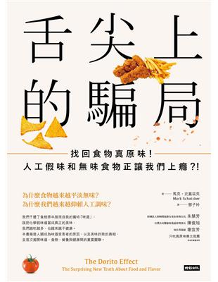

|  |
舌尖上的騙局 |
推薦序 雞毛、頭髮都能做醬油！黑心食品無所不在
前不久聽一位食品加工界的大老細說台灣醬油食品的點滴，我才知道雞毛醬油很可能還在台灣市場流竄。雞毛醬油顧名思義就是用雞毛當原料做成的醬油，原理跟曾經在中國被揭露的頭髮醬油如出一轍，都是用含有蛋白質的天然回收廢棄物，例如理髮院的人髮、屠宰場的雞鴨鵝毛、剝蝦場的下腳料蝦殼等當基底，以鹽酸水解變成氨基酸液，再經過調味調色，甚至混合真的豆製醬油，最後變成有色有味的醬油產品。
黑心醬油並不是現代產物，早在日據末期時的台灣就曾經被踢爆過。一九五○年代著名的淡水河染黑事件，就是政府將查緝的十四萬公斤假醬油倒入淡水河，致使河水和河裡生物遭到無妄之災的真實故事。
推薦序 感官被假味道綁架，讓人類成為營養白癡
二○○三年，我在西雅圖執業時，有一位七十歲的老先生告訴我，他每年冬天都會到墨西哥避冬。他說只有到墨西哥的鄉下，才能吃到小時候食物的味道，因為現今美國的食物都沒味道。有人會認為，他可能因為年紀大了，味覺感官退化吧！才會覺得食物沒味道。但事實證明，近幾十年來，美國食物的原味真是跌到谷底了！現代化農業重視的是產量，而完全忽略了食物的味道。所以，在美國超市買過菜的人都知道，架上的蔬果又大又漂亮，但是味道很平淡，萵苣和番茄，吃起來真的味如嚼蠟！
問題不止於此，為了掩蓋食材平淡無味的窘境，食品業者發明了數以千計的人工香料與調味劑，添加到幾乎所有的加工食品上，結果是，不論是超市架上的糕餅零食飲料，或是餐館裡的誘人佳餚，你會發現都超級好吃！因此，造就成現代美國食物的「兩極化」：新鮮食材平淡無奇，但加工食物聞起來香氣撲鼻、吃起來刺激過癮，令人一口又一口，欲罷不能。下次當你看到有人不停地吃洋芋片、薯條、炸雞、泡麵的時候，不要責怪他，因為他早已被人工調味劑綁架了！
Part 1 多力多滋玉米片效應 THE DORITO EFFECT
1 「東西」變「食物」的秘密，就藏在化學調味劑裡
從胖子聚會，變成世界知名的瘦身公司
尼德契再也無法承受這樣的心理壓力，她得把隱藏在心中的秘密說出來，所以她打電話給六位肥胖的朋友，邀請他們到自己家來一起開誠布公，分享心情。這些朋友全都支持她，說她「有權利」吃餅乾。他們平常也是這樣大啖餅乾的。有個朋友是把巧克力脆片藏在櫥櫃的盤子後面，還有人是把零食藏在蘆筍罐頭後方以免被發現。他們也都坦承會在半夜爬起來吃東西。
在聚會結束前，有位客人問道：「我們下個星期可以再來嗎？」到了下禮拜，這些客人帶來其他三位肥胖的朋友，再下個禮拜又增加了四個。
一年後，尼德契的體重已經降至六十四公斤，她舉辦的聚會也越來越受歡迎。有天晚上，一個因為參加此聚會而減掉了十八公斤的商人建議她，可以把這個小型計畫變成一門生意。尼德契照辦了。五年後，光是在紐約市她就開設了兩百九十七個減重班，在十六個州有二十五家加盟店。一九七八年，以製造蕃茄醬而著名的亨氏公司（Heinz）花了七千二百萬美元買下她的公司。該公司的名字是「慧儷輕體」（Weight Watchers）。
美味的假味道大受歡迎
一九六二年夏天，菲多利公司（註3）的行銷副總裁亞契‧魏斯特（Arch West）帶著妻子和三個孩子到南加州去。表面上，這是一次家族旅行，全家人坐著老爸的林肯轎車，從達拉斯長途開車到橘郡，中途順道去卡爾斯巴德洞窟國家公園和大峽谷。
不過，這趟旅行一開始就和「味道」有絕大的關係。魏斯特在進入菲多利工作之前，是紐約麥迪遜大道的廣告人，當時他負責卡夫食品公司（Kraft）的廣告，以及Jell-O布丁的銷售。順道一提，威斯特一家人在紐波特時，是借住於勞瑞斯調味鹽（註4）發明人法蘭克（Lawrence Frank）的房子。
某天，這家人在「冠蓋雲集」（Five Crowns）這家餐廳用餐時（魏斯特喜歡這家的頂級肋排和美味的奶油菠菜），一個陌生人走來，恭維了他女兒的金色頭髮，然後問魏斯特一家是否曾經到他的餐廳用餐過，不過這一家人並沒有聽過他的餐廳。兩年後，這家餐廳的第五百家分店會在俄亥俄州的托利多市開幕。這個人叫克羅克（Ray Kroc），他的餐廳名稱是麥當勞。
然而，這次旅途中最重要的一餐，並不是在「冠蓋雲集」，也不是在那家後來成為全世界最大的連鎖漢堡速食店中，而是魏斯特在洛杉磯和聖地牙哥之間的高速公路邊看到的一家墨西哥小吃店，他停下車，點了一小份墨西哥玉米片。那酥脆的口感吸引了他。
魏斯特負責行銷的零食菲力多滋玉米片（Fritos），與墨西哥玉米片只有在這種酥脆的口感上有顯著的差異。基本上，這兩種零食都是以玉米澱粉炸過製成，但是墨西哥玉米片會先烤過，因此更酥，這讓魏斯特留下深刻的印象，他認為墨西哥玉米片可能會是菲多利公司的下一個暢銷產品。
當魏斯特回到達拉斯的公司總部後，就對其他的業務主管宣布這個好點子，但大家對此都興趣缺缺。他的同事質疑，美國人既然已經有了完美的玉米片，幹嘛還要墨西哥玉米片？他們連吃都不想吃。
但魏斯特對墨西哥玉米片的未來深具信心，所以他使用自己可以自由運用的資金，在公司外的工廠繼續發展墨西哥玉米片的概念。之後，他又再次努力推銷這個概念，還發放了試吃品，並幫它取了一個非常墨西哥化的名字，叫做「多力多滋」，意思是「小片黃金」。這次他的提案通過了。
魏斯特用來吸引其他主管的多力多滋，和他之前在加州吃到的墨西哥玉米片非常相似，只是再加入鹽調味，當一九六四年上市放在商店的貨架上時，包裝上是寫著「烤玉米風味」。當時在美國西南部賣得不錯，那裡的人知道這種帶角的脆片很適合舀起一些沾醬一起食用（早期的包裝上還畫著拿著多力多滋的手，伸向沾醬處）。但是美國其他地區的人不知道該怎麼吃，多力多滋聽起來像是墨西哥食物，但吃起來又不像墨西哥食物。這可是個問題。
於是，其他高層再度反對這個有趣的新零食，因為它並未造成流行。那些經理們冷眼嘲笑著這個紐約來的花俏廣告人，說他「不懂『東西』和『味道』之間的不同。」但其實魏斯特早已超前他們一步，這可能是因為他和勞瑞斯調味鹽的大人物法蘭克是朋友，他早就知道「東西」和「味道」這兩者間的界線模糊。他反擊道：「當然我們深明此事，但是住在這個國家北部的人可不知道這點，而這些人就是我們的市場。」
結果，市場還真的很大。後來，美國東北部、西北部、南方和西南方的人，都喜歡墨西哥玉米片風味的多力多滋。
四年後，菲多利再次模糊了東西和味道之間的界線，這次他們推出嚐起來像是烤乾酪的多力多滋。到了一九八六年，沙拉醬口味的墨西哥玉米脆片誕生了。及至二○一○年，不論是小孩還是青少年，大麻成癮者還是意志堅定的人，全都喜歡玉米片，這讓菲多利公司每年賺進了五百億美元。
目前美國有十四種口味的多力多滋玉米片，包括了義大利青醬和香甜辣味口味。每天在世界各地都有數以千萬根手指沾上了黏黏的橘色調味料。每秒鐘，這些手的主人都體驗到難以抵抗的慾望，想要把手一直伸進袋子裡，鹽味、脂肪和香料的無敵組合，讓無數的神經元興奮起來。一如在一九六八年的包裝袋上所大肆吹噓的：「酥脆好吃，讓人忍不住一口接一口。」
用「加味」解決「無味」
「東西」和「味道」這兩者當然不能劃上等號。不同的東西會有不同的味道，橘子嚐起來就像橘子，香蕉嚐起來就像是香蕉，墨西哥玉米片嚐起來會像是墨西哥玉米片餅，玉米片嚐起來當然像是玉米片。至少在每個家庭沒有聽說過麥當勞之前，世界是這樣運作的。
在魏斯特進入菲多利的前幾年，該公司便開發出了烤肉風味的洋芋片，使得薄薄的炸玉米片有著和在木炭上慢慢烘烤的烤肉般的煙燻與香甜風味。吃烤肉風味洋芋片的人，所喜歡搭配橘子、葡萄或檸檬口味的冷飲，在當時也還沒添加任何「東西」。
到了一九六○年代初期，香料科技往前邁進了一大步，這時的科學已經進展到不僅能夠模糊、甚至還能扭曲這條界線。魏斯特就是這麼做的，他把單純的炸玉米片加入墨西哥餐點的濃烈香辣風味。於是乎，「東西」改變了。
與此同時，水果、穀物、肉類和蔬菜的味道也變得越來越平淡。菲多利公司在一九六○年代用來製造菲力多滋玉米片的玉米，表面上看起來和愛爾默‧杜林（Elmer Doolin）在一九三二年創立菲力多滋公司時的玉米一樣，但是吃起來的味道卻已大不相同。在一九六七年，美國的玉米農場面積比三十年前增加了三倍。玉米產量變多了，味道卻變少了，就像是次級的玉米一樣地毫無滋味。
馬鈴薯也是同樣的狀況，當杜林開始生產菲力多滋玉米片時，赫爾曼‧樂（註5）也開始了洋芋片生意。當時農夫在每英畝土地上可種出六十三袋馬鈴薯，但是到了一九六○年代中期，產量提高到兩百袋。只是這些馬鈴薯也像玉米那樣，吃起來不像是馬鈴薯。
而這個問題有解決之道。農作物的平淡無味可以用工業方式加以改善。科學家利用當時最先進的分析技術，取得了能讓人類體驗到「味道」的神秘化合物，然後化學公司開始製造這些化合物，並賣給食品公司，好讓食品公司能在食物中添加這些化合物。在一九六八年墨西哥玉米脆片口味的多力多滋包裝上，這些化合物僅用一個極簡單的名詞來表示，那就是──「調味劑」。
魏斯特在「食物越來越無味」和「香料越來越精進」的這兩道浪潮中屹立不搖，並讓兩股勢力合而為一。他展現出香料技術的無限潛力。墨西哥玉米片口味的多力多滋嚐起來遠勝於無味的菲力多滋玉米片，但不像真的墨西哥玉米片那樣會腐壞，更絕對不會焦掉，吃起來味道永遠都是一致的，既不用煮且又便宜。最初一又四分之三盎司包裝的墨西哥玉米片口味多力多滋只賣十五美分。
多力多滋不只預言了玉米片的未來、零食的未來，也預言了所有食物的未來：每種食物吃起來已經「不像自己」了，而像「我們想要它吃起來」的樣子。當食物越來越無味時，我們就大把大把地使用幾百噸的香料來賦予味道。大部分的人把這些食物歸類為「垃圾食物」，但是這些狀況也正發生在餐廳提供的食物上，發生在人們從超級市場買回家裡當食材烹調的食物上，包括藍莓、雞胸肉、綠色花椰菜、萵苣，還有茴香。如果每種食物越來越食而無味，我們就加入更多調味料來解決，因此，每種東西都越來越像是多力多滋。
是人類改變了味道，還是味道改變了人類？
我們喜歡具墨西哥玉米脆片風味的多力多滋勝於沒有調味的，即使我們知道那不是真的墨西哥玉米片風味。我們喜歡可樂、七喜和薑汁汽水，遠勝於古早的無香味糖水。我們喜歡化學香料，而且對於這些香料已經添加到一些天然食物中毫無知悉，包括生啤酒、奶油、醬油、優格和茶葉。這種欺瞞的手法如此高明，讓人視而不見。我們其實都戴著味道眼鏡。
2 雞肉的無味時代
長得快又大才是養雞的重點
精確地說，雞肉是在一九四八年三月開始變得無味。
當時在馬里蘭州伊斯頓的一座孵化場，有五十隻改變了全世界的小雞啄破了蛋殼。這些蛋全都是來自加州馬里斯維爾的凡翠絲孵化場。在一個月前，那裡有隻健康的加州康瓦爾種公雞，上了一群健康的新漢布夏母雞。這些蛋和來自其他二十五州共三萬一千六百三十顆的雞蛋，齊聚於伊斯頓，共同參與一件大事，這件事決定了未來幾十年雞湯、雞高湯以及燉雞的味道。
那是場稱為「明日雞肉」的比賽，由國家禽類研究主任皮爾斯（Howard“Doc”Pierce）與當時最大雜貨連鎖業者之一的「大西洋與太平洋食品公司」（A&P Food Stores）所聯合策劃。一九四○年代末期是雞肉事業最好的時代，同時也是最糟的時代。在第二次世界大戰期間，紅肉採取配給制，雞農因而受惠，當時雞肉的食用量倍增。但是戰爭結束後，皮爾斯擔心美國人又會重回紅肉的懷抱，這將使雞肉的消費量暴跌。他想要阻止這種情況發生。
在一九四○年代，雞肉和現在大不相同。從現代的觀點來看，那時雞肉還滿貴的，而且是雞蛋工業的副產物，大小也不一致。小的肉雞（broiler chicken）不到一公斤重，肉質軟，因此可以直接放在烤架上烤熟。比較大一點的是用來油炸的炸雞（fryer），肉質稍硬，但還算小。然後是烤雞（roaster），可以整隻放到烤箱中烘烤。最後是「老母雞」（fowl），因為肉質很老，只能拿來熬湯或燉煮。如果要來個快速又輕鬆料理的晚餐，你會需要肉雞或是炸雞，而且可能還得用到兩隻才夠吃，所以要多花點錢。
皮爾斯認為，人們需要能夠穩定供應、肉質柔軟，而且雞胸肉肥厚的雞隻。因此大西洋與太平洋食品公司提供高達一萬美元的獎金，並把外型完美的雞模型送到全國各地。只要誰能養出一群長得又快又最接近那隻模型的雞，就能得到這一筆大錢。
當時，有來自二十五州的三萬一千六百八十顆雞蛋聚集在馬里蘭州的一座孵化場中。這些蛋所孵出的雞，將會在相同的圍欄中飼養，餵食牠們的飼料秘方中，最少會有二十％的蛋白質，三‧五％的脂肪，以及七％的纖維質。在八十六天之後，這些雞將會抵達競賽（與生命）的終點：接受屠宰，並接受評審。這些拔光毛的雞，在明亮且精確的照明下，會依照體型大小的一致性、雞皮的品質、雞胸肉的長寬高，還有孵化率、飼料換肉率和平均重量等各項標準加以評分。
其中，來自凡翠絲孵化場的雞很大，平均重量為一‧七公斤，飼料換肉率是三‧一七，也就是說餵三公斤的飼料可以長成一公斤的雞。
這就是農業上所稱的「改良」，而且已經進行了幾十年了。在一九二三年，要花十六個星期才能把雞養成重量只有一公斤的嬌小肉雞，飼料換肉率是四‧七。到了一九三三年，同樣等級的肉雞可以有一‧二二公斤，而且飼育的時間減少了兩週。到了一九四三年，肉雞在第十二週時已經有一‧三六公斤了。這些來自凡翠絲孵化場的雞，不只比其他的雞重了整整半公斤，而且用比較少的飼料就可以養那麼大。
那麼，這些如奇蹟般的雞嚐起來又如何呢？沒人知道，評審並沒有審查味道，因為這個比賽的重點，是在培育出「長得像那個雞模型」的雞。
「雞博士」打造三十五天速成肉雞的新世界
明日雞肉大賽還有第二個傳奇故事。
保羅‧席格爾（Paul Siegel）在一九四八年時才十五歲，將來他長大後會成為家禽科學史中最重要且多產的研究者。當時他住在康乃迪克州一座三十二英畝的農場中。在那個年紀的時候，他就已展露對於禽類的非凡天賦。
當他知道明日雞肉大賽有青少年組時，便去自己的小雞農舍中，抓了一些新漢布夏種的公雞，和一些白色蘆花種母雞交配。小雞孵出後，他總是讓飼料槽裝得滿滿的，並且確保這些雞不會跑到外面溜達，因為只要每出去一次，就會浪費一些可以用於生長的寶貴能量。經過了十二個星期的悉心照料後，好消息傳來了，他得到康乃迪克州明日雞肉大賽青少年組的獎項。
六年後，席格爾獲得家禽遺傳學的碩士與博士學位，之後任職於維吉尼亞州立理工學院暨州立大學，至今一待就是五十年。在他非凡的職業生涯中，孵育了大約二十萬隻小雞，發表了五百多篇論文（其中絕大部分都與雞有關）。他不僅進入了美國家禽產業名人堂，也名列國際家禽產業名人堂。
席格爾運用其非凡天賦所探究的原理，早在明日雞肉大賽中就已展現無遺，而這項原理也摧毀了接下來幾十年雞肉麵疙瘩的味道，那就是：我們可以用育種的方式改變雞隻。生長速度和肥胖程度並非固定不變的物理定律，只要選擇正確的公雞和母雞交配，就能夠改變雞隻的基因，讓小雞和雙親在各方面都不相同，而且是大相逕庭，天差地別。
這些改變基因的現象持續進行著。到了一九五一年，明日雞肉大賽的冠軍雞隻，比一九四八年的冠軍要提早兩個星期就能達到相同的大小。到了一九五五年，參賽雞隻的平均重量與一九五一年的冠軍相同。到了一九七三年，冠軍雞隻的飼育只需要八個半星期。
在第二次世界大戰結束後，雞肉的消費量的確下降了，一如皮爾斯博士所擔憂的情況。但是當雞肉越來越便宜、越來越肥大，銷售量就止跌反彈了，在一九五○年代初期已回復到戰時的食用量，到了中期更已經超過。到了一九六七年，美國人的雞肉食用量是一九四八年的兩倍。到了二○○六年，雞肉既多又便宜，食用量更提升至一九四八年的五倍。
席格爾發現，利用配種方式改變與改良雞隻是要付出代價的，例如當體重增加，產蛋率就會下降，因此養雞產業現在分成肉雞與蛋雞兩個截然不同的領域。
如果將現代的肉雞與蛋雞相比，前者是處於相當悲慘的階層，因為牠們要把所有的能量用來長肉。相較之下，蛋雞瘦到不像樣，而且只要一旦能夠區分出雞隻性別，雄蛋雞就會被挑出來，然後殺掉，可能是砍頭，可能是用瓦斯毒死，或活生生放到高速絞肉機中。
此外，席格爾對於美國及全世界的影響最深之處，是他栽培出來的學生，這一小群禽類遺傳學家（基本上就是專業的雞隻育種者）遍及世界各地，也都懷抱著同樣的目標：改良雞隻，讓牠們在更短的時間內養胖，提升飼料換肉率，而且生長速度更快。
剛開始，雇用這些學生的業者是在全國各地的新穎小型孵育場。當雞肉的消費量往上攀升，養雞事業成為大生意時，這些畢業生就以禽類遺傳學專家的身份，加入了跨國的大型公司。現在有三家全球性的養雞巨擘：哈巴（Hubbard）、快肥（Cobb）和安偉傑（Aviagen）。絕大多數的人沒有聽這幾間公司，但是都吃過他們家的雞肉。
這些「改善」出現了當初始料未及的結果。現在的肉雞比以前更大，飼養的時間只需要一九四八年時的一半，約三十五天。不過現在的肉雞重達七五○公克，而且所需要的飼料居然只要不到原來的三分之一。雞本來可以如鵝般敏捷行走，現在因為變胖而且腿變短了，所以只能蹣跚而行。而且由於胸肉變得又寬又厚，現代的雞已經無法站直。現在剛宰好的雞就像是肉類世界的AV女優：以專業的方式剝下外衣，展現動人的曲線。席格爾回想到一九四八年那些完美的雞隻模型時，笑道：「他們絕對想不到現在的雞會長成這樣。」
換句話說，當年皮爾斯博士的夢想已經風光實現了。雞肉成為消費量首屈一指的肉品。這個以前喜歡吃牛肉的國家，現在每年要吃掉將近一百二十億公斤的雞肉，而且價格很低廉。在一九四八年，一隻兩公斤半的雞要三美元，這聽起來很便宜，但如果換算成二○一四年的幣值，相當於一隻雞要三十美元。二○一四年，在超級市場買一隻雞只需要七美元。現在雞肉的價格跟當年在明日雞肉大賽相比，還不到四分之一。
此外，現在的雞就大小來說，已經全是「肉雞」了。雖然食譜中還是會提到「肉雞」和「烤雞」，但牠們現在都已絕跡。我們吃到的是巨大的小雞。就如同一篇刊載於《家禽科學》所指出的，如果人類長得和肉雞一樣快，那麼「三公斤的新生兒在兩個月後的體重將會是三百公斤」。
席格爾喜歡吃雞肉的程度，就和他喜歡研究雞隻的程度一樣，但他也會承認對雞隻的所有改良，使得雞肉嚐起來的味道和以前不一樣了。他吃過最棒的雞肉不會是未來的雞肉，而是以前的雞肉。他很懷念母親昔時煮的燉雞，就如同在威奇托那位丈夫懷念母親做的雞肉麵疙瘩一般。後來，他吃過最美味的雞肉，是「紅標雞肉」（註2），這是飼育八十四天的慢長雞（slowpoke）。這個品牌的名稱並非英文，他是在法國吃到的。
蔬果的營養不見了！那我們吃進了什麼？
在一九九九年十二月號的雜誌中，資深編輯雪莉兒‧隆恩（Cheryl Long）寫了一封公開信給農業部長。她宣稱，食物似乎越來越不健康了。她引用當時才剛在《英國食物期刊》發表的論文來支持自己的論點。該篇論文的研究比較了一九三○年代與一九八○年代栽培出來的水果和蔬菜，結果發現，在大黃、香蕉、防風草等食物中，人體必須的微量營養素含量比以前減少了。其中，鈣質減少十九％，鐵質減少二十二％，鉀減少了二十二％。她寫道：「部長先生，這到底是怎麼回事？」
農業部研究處主任回了信，坦承蔬果中的營養成分含量看起來的確在下降，但是不用太擔心，因為有很多原因都會造成這種現象，例如在一九三○年的分析技術還沒有那麼精確，因此可能不需要太在意。對此，《有機園藝》又用一篇標題為〈食物品質下降時，農業部只能聳肩〉的社論予以反擊。這回，美國農業部就真的只能像標題所形容的，用聳肩來沈默回應。
有位德州大學生物化學研究所的科學家唐納‧戴維斯（Donald Davis）也讀了英國的那篇研究報導，他注意到一個問題：研究中沒有把「水分這個因素」考慮進去。他指出，現代的蔬菜水果的水分含量比以前更高，因此問題可能只是現在的農產品品種比以前的祖傳品種更加肥大多汁。
戴維斯和兩位同事以一九九九年那篇論文中的方法，比較了一九五○年的三十九種蔬菜、三種甜瓜以及草莓等所含有的營養成分，並因應含水量的不同而調整了結果。他們也使用更精確的統計學方法，廣泛調整各項誤差與偏斜，以確保沒有一丁點不利於現代農產品的偏差出現。
但這次的結果還是不同。讓人吃驚的數據有：一九五○年代的甘藍菜中，核黃素的含量是現代甘藍菜的兩倍；花椰菜的維生素B1是兩倍，蘆筍中的抗壞血酸（維生素C）是三倍。不過狀況也並非都像這樣一面倒，例如一九九九年的蔥含有的核黃素就比一九五○年代的蔥要多（但是鈣比較少）。然而整體的趨勢很明顯：維生素C少了十五％，維生素Ａ少了將近二十％，看來現代農產品的營養成分早就開始走下坡了。
戴維斯和同事把這些結果寫成論文，投稿給權威的《美國營養學院期刊》，這篇論文也送交國內數個受敬重、但不具名的科學家進行獨立審查。有個審查的評論引起了戴維斯的注意，評論中提到了「稀釋效應」（dilution effect）。戴維斯研究了營養學那麼多年，從來沒聽過這個有趣的名詞。他進一步了解後得知，早在一九四○年代就有科學家發現這種效應了。
戴維斯也注意到，遠超過半個世紀前就已存在的現象，那就是如果對農作物加以施肥與灌溉，農產品中的主要礦物質和微量礦物質的濃度就會降低。但是密集耕作並不是造成此現象唯一的原因。他發現，遺傳也會造成了稀釋效應。綠花椰菜、小麥和玉米等農產品營養減少的原因之一，是它們在被精心育種時產生了變化。這些農產品就像雞肉一樣，因為長得快又大而選育出來，使得營養成分被稀釋了。看來農民在過去五十年來一直在做的育種、施肥、噴藥，都降低了食物的營養成分。
這是一項警訊。回顧過去五十到一百年來的農業史，產量大規模提昇，改變了全世界。產量有如奇蹟般爆發性的成長，甚至享有「綠色革命」的美名。雖然這讓十億多人免於饑荒，但農產品的品質也下降了。
那麼，植物用什麼東西來取代這些減少的營養成分呢？綠色花椰菜中少了鈣和鎂，那又多了些什麼呢？戴維斯指出，每種植物的變化都不同，但大致上是我們吃到的水和碳水化合物增加了。
味道淡如水！中看不中吃的蕃茄
不過之所以產生味道稀釋的狀況，還有比水更深層的原因。在一九八九年，孟山都的一位分子生物學家亨利‧克雷（Harry Klee），曾試圖讓番茄這種味道稀釋特別嚴重的常見食物更美味，只是他失敗了。此外他還發現，水分只是造成現代農業問題的部份原因。
當克雷一開始嘗試解決無味蕃茄的問題時，他和其他大部分的蕃茄科學家一樣，都認為因為蕃茄是在尚綠的時候就摘下來了，所以才會沒有味道。由於蕃茄從佛羅里達州、加州和墨西哥的農田採摘後，要經過長途旅程才能抵達密西根州、阿拉斯加和緬因州，因此農人在蕃茄還像青蛙那麼綠的時候就得摘下來了。有時候這些蕃茄會在運送的過程中熟成，但是最常見的是讓這些蕃茄儲存在倉庫中，然後用乙烯氣體加以催熟。問題應該就出在這裡了。就像是每個阿媽都會說的，在卡車或倉庫中熟成的蕃茄，滋味沒有在蕃茄藤上熟成的好。當蕃茄從藤上摘下來後，便與能量來源（也就是葉片）分開來了，因此讓自己變美味的能力也喪失殆盡。
於是，克雷想到一個點子：何不培育出一種能成熟得比較慢的蕃茄，讓它在蕃茄藤上的時間久一點，待快要成熟時再採收，之後在卡車運輸途中就可完全熟成。這種蕃茄的滋味可能比不上在藤上熟成的，但應該比還青綠時就採摘的蕃茄好吃。
這其實不是什麼新點子。科學家原本就認為慢慢熟成能夠解決蕃茄無味的問題，新穎之處是在於能夠用遺傳工程技術實現這個想法。一九八九年，克雷的團隊把一個自土壤發現的菌種基因，植入一般紅蕃茄的基因組中，結果蕃茄熟成的速度真的就減緩了，一般蕃茄要一個星期，新的蕃茄則需要三個星期。而且，這些基因改造蕃茄能夠維持鮮紅飽滿長達數個月，風味十足，甜酸夾雜又充滿香氣。據克雷估計，為了研發這個基因改造的慢熟蕃茄，孟山都大約花費了一千萬美元。這種蕃茄比一般超市賣的無味蕃茄味道要好些，不過克雷認為「離我們真正想要的還差得遠」。
一九九五年，克雷離開孟山都，進入佛羅里達大學根茲維分校的園藝科學系，專心埋首研究蕃茄。經過將近二十年、研究了三百萬顆蕃茄後，他確定了之前的想法：現代的蕃茄，非常、非常平淡無味。
當番茄尚綠未熟時就摘下來，只是影響風味的眾多因素之一。但就算是讓蕃茄慢慢成熟也無法解決無味的問題，因為當調節成熟的基因作用減緩了，蕃茄就無法完全成熟。「慢慢成熟」也只是「成熟不完全」的另一種說法而已。
顏色則是蕃茄的另一個問題。在上個世紀初期，蕃茄農發現一種可以讓蕃茄紅得很均勻的突變基因，能讓蕃茄看起來鮮潤多汁，好像即可食用。在此之前，蕃茄會有綠色的斑塊和條紋，但是卻比較好吃，因為這些含有葉綠素的區域能夠產生能量，提供蕃茄在產生味道的過程中使用。但後來大家都把注意力放在蕃茄的外觀上，因此到了一九五○年代，所有蕃茄的紅色就如同由工廠製造般一致。
當然，接下來的問題就是產量了。在一百年前，典型的蕃茄植株高約四公尺，同時只能結成四到五個成熟的蕃茄，其他綠色的蕃茄還要等上數星期才能熟成。現在的蕃茄植株最多只有兩公尺高，上面可以同時有十顆成熟的蕃茄。但這樣所結的果實太多了，植物的「資源有限」，全部的葉片加起來都不足以提供讓這些果實生長所需的能量，只好減少對果實提供的養分，也就是加入水分，因此蕃茄嘗起來就只能和填入的水一樣索然無味了。
不過就算你解決了顏色的狀況，讓葉片與果實的數量比例恢復平衡，並去除多餘的水分，也依然無法改善現代蕃茄的風味問題。原因是在遺傳因素上，現代蕃茄已經讓人忘了如何才能嘗起來美味可口。育種者篩選出能夠賺錢的性狀，例如產量、抗病，以及讓外皮增厚以利運輸，但卻忽略了當初造就美味的基因。與之相關的基因很多，然而在無數代的育種之下，某些風味也逐漸流失了，現在要讓這些蕃茄嘗起來好吃的方法只有一種：食用時用一罐牧場沙拉醬來調味。
放養雞V.S.飼料雞
大約在上個世紀初，一位荷蘭醫生克里斯蒂安‧艾克曼（Christiaan Eijkman）發現，他養的雞如果只吃白米，就會出現腳氣病，不良於行，可能還會嘔吐，然後無法動彈，最後會死亡。但如果這些病雞吃了糙米，就會復原。艾克曼認為，在糙米中應該藏有一些能維持健康的很重要成分，是白米中所欠缺的。
幾年後，波蘭的生物化學家卡西米爾‧芬克（Casimir Funk）發現了讓糙米看起來粗糙的東西，也就是米糠，在用酒精和磷鎢酸加以處理後，取得了近乎神奇的少量物質，能夠在幾個小時之內，讓因為腳氣病而瀕臨死亡的鴿子恢復生機。芬克把這個革命性的物質稱為維生素（事實上那就是維生素B1，現在稱為硫胺素，也就是在花椰菜和甘藍菜中少了一半的營養物質）。
此後，營養學的研究脫胎換骨。之前許多致命的疾病，例如軟骨病、壞血病、腳氣病和糙皮病等，在發現維生素之後，不但能夠治癒，還可以預防。
當禽類科學家找出維持雞隻生命所需的維生素、礦物質、胺基酸和其他微量營養成分的清單後，飼料製造業者開始把這些東西加入雞飼料中，從此以後，雞再也不需要到戶外走動，不需要吃高麗菜，也不需要吃殘羹剩菜，或是死掉的癩蝦蟆，就能夠獲取「完整的」飲食。最後，人們可能需要致力讓雞隻變胖的東西就是碳水化合物。在一九四○年代晚期，一種新穎且重要的飼料在家禽界中大鳴大放，那就是高機能飼料（high-energy diet）。如果要讓雞隻比牠們的近代祖先增胖速度快上兩倍，就要直接注射碳水化合物。
高機能飼料富含熱量，但是缺乏味道。這些飼料主要是由各種種子混合而成，包括了玉米、小麥、小米和黃豆等。當然有些種子（例如：肉豆蔻）是富含風味的，但是餵給雞吃的那些種子並沒有味道，它們全跟蕃茄一樣經過了「改良」的過程。
雞隻不像蕃茄一樣會自己製造風味，而動物吃的東西又會極度影響肉質。雞隻飼料中的風味分子會進入雞的身體組織中，科學家把這種狀況稱為「生物分布」（註3），例如乳牛如果吃了洋蔥草，分泌的乳汁中就會有洋蔥味。
就營養來說，雞並不缺乏；但是就味道來說，能獲得的資源的確有限。現代的雞肉就像是現代的蕃茄，同樣也缺乏味道的補充來源。
當「添加物的味道」變成「食物的滋味」
從絞肉機出來的是有著刺鼻味道的灰色肉團。這些肉團會被裝進塑膠桶中，運送到另一個房間。穿著塑膠白靴的工人，用白色的塑膠鏟子把肉團放進發出巨大聲音、不斷震動的機器中，這個機器會把看來難入眼的肉團揉捏成完美的雞塊，之後一個個放到輸送帶上，敷上已經調味過的麵團，沾滿麵包粉（這也是調味過的），然後炸成金黃色，再冷凍、裝袋、裝箱，運送到全國各地連鎖餐廳。
帶我參觀那座工廠的廠長坦率地表示，他們賺的錢是從兩個地方來。首先是麵包粉，在雞塊中，麵包粉的份量和雞肉一樣多。第二是水，在雞塊中加入的水越多，獲利就越高。就像農業界對雞肉及蔬菜水果所做的事情一樣：添加水和碳水化合物。
現在市售的雞肉幾乎有一半都經過這樣的「加工處理」，包括雞塊、雞肉香腸、雞肉餅、雞肉漢堡、雞柳、雞肉片，以及基輔雞，這些都已經事先加了許多調味料。你可以想像一下，這些用大紙袋裝著的調味料，一車一車地載到工廠，放在香料倉庫中，旁邊還有醃料粉、麵包粉和奶油，要用的時候就打開一大袋全部倒下去。
因此，調味也不關餐廳的事了，雞肉調味本身已經變成一項工業。香料紙袋上面標記的公司名稱，不是雞塊工廠，不是餐廳，也和孵蛋、養育、屠宰和調理無關。這家公司叫做「格里菲斯實驗室」，而這只是眾多公司中的一家。這一行提供的服務稱為「味道解決方案」。
3 舌尖上的化學──人工製造天然味
馬達加斯加的香草困境
凱斯特納是「味好美」公司（McCormick&Company）的香料採購員，這個工作是負責追求更美味的食物。他可能會在上個星期飛到巴西採購幾噸丁香，下個星期則可能參加墨西哥叢林中的香料探險隊，還受到大批殺人蜂的追擊；他也曾經和東加王國的國王私下會面過。凱斯特納喜歡這個工作，因為他熱愛香料，也熱愛這些香料生長的奇妙地方。其中，馬達加斯加就是特別的國度，因為那裡生產香草，他稱之為「最神奇的香料」。
關於香草萃取物，什麼都好，就是價格不好。這玩意兒在馬克斯主義國家以外的地方也很昂貴。首先，要培育香莢蘭，以人工方式為花授粉，等到香草豆莢成熟，在適當的時間摘採，然後放到熱水中煮沸，再在熱鍋子或箱子中發汗（sweating），接著每天早上要拿到陽光下曝曬，直到乾燥為止。
接下來，這些香草豆莢要放到密封的箱子中放置數個月等待熟成，直到香草豆莢變得和葡萄乾一般濕潤，如小雪茄那般黑，就可以先運到歐洲，再送到美國紐約，進入萃取工廠。香草豆莢會切成碎片，用酒精緩慢地流過碎片加以浸潤，這個過程就要花上一天，然後再放置數個月以便讓雜質沉澱，從蘭花開花到製成萃取物需耗時一年半。這種萃取物一盎司的價格，即使是便宜的，也相當於一杯上好的蘇格蘭單一麥芽威士忌。
係金ㄟ！松樹皮也能產生香草味
一百零七年前，德國柏林大學的化學家威爾漢‧哈曼（Wilhelm Haarmann）也曾提出了相同的問題。當時他沉迷於一個非常奇特的興趣：研究松果。他相信松果能夠產生幾近神奇的白色粉末，讓糕餅、飲料和巧克力更美味。
這種粉末並不是秘密，之前有位法國人就曾純化、並過濾香草萃取物，最後得到一種白色的結晶物質，聞起來像是濃郁的香草，就是現在所說的香草醛（vanillin）。香草的秘密雖然已不再神祕，但也沒有人利用香草醛做過什麼事情，因為它只能從香草萃取物中提煉出來。香草萃取物已經很貴了，香草醛更是比等重的黃金還要昂貴。
不過哈曼還知道其他不為人知的秘密。多年前，在哈曼的家鄉霍爾茲明登有位藥劑師，一直拿從松樹內層樹皮中刮下來的一種物質來做實驗。他壓榨樹皮、煮沸過濾的汁液，然後把黏稠的物質加以純化，得到一種結晶，據他描述是「白色，具有絲綢般光澤，而且非常細緻」。當藥劑師把酸噴到這些結晶上時，奇特的反應發生了：空氣中出現了香草的香味。
有可能用為數眾多又常見的松樹，製造出珍貴的熱帶異國物質嗎？哈曼想辦法取得了老藥劑師塵封已久的松樹結晶，然後在實驗室中實現化學奇蹟：他把這些結晶變成了香草醛。
一八七五年，哈曼從黑森林收集到二十多公斤的松果，設立了「哈曼香草醛工廠」。之前只能從熱帶蘭花取得的獨有物質，現在在德國的工廠中就能製造出來。把松果從一端放進去，香草醛就能從另一端出來。他後來還找出以更便宜的丁香油為原料來製造香草醛的方法，接下來更製造出一種在紫羅蘭中發現的合成香料，這種香料至今仍用來產生水果的香味。他的香料事業大為成功，使得家鄉霍爾茲明登成為「香水之城」。
嘴鼻聯手，讓「吃」成為享受
製造香料的城市卻以香水而出名，這聽起來可能會很奇怪，這是因為我們多半認知的味道（flavor），其實是香氣（aroma），包括了氣味、馨香和香味等。我們所喜歡食物中的各種特色，其實主要的都是香氣。這可以用一種稱為「鼻後通路」（retronasal olfaction）的現象來解釋。
這是指香氣並非由鼻孔進入鼻子中，而是從喉嚨後方的一個洞（咽頭）進入鼻子中。基本上這種嗅覺和從鼻孔進入而發生的嗅覺不同，在大腦有不同且更多的部位參與其中。在所有的感覺中，這是最強烈、但也是我們所知最少的。我們知道我們能夠看見、聽見、嘗出和聞出在面前的物品，但極少人瞭解鼻子究竟為何能品味食物（品酒師可能是最知曉味道的人，他們會從鼻子中呼氣出來，好充分體會葡萄酒的香味）。
香料工業界沒有忘記舌頭的功用。一九○八年，日本的化學家池田菊苗想知道究竟是什麼東西讓乳酪、肉類和日本魚高湯有著令人難以抵抗的鮮甜滋味，他以當時最先進的化學技術處理海帶，發現了魚湯中的秘密：一種稱為「麩氨酸」的物質。一年後，池田開始販售可以食用的麩氨酸形式，也就是麩氨酸鈉（簡稱MSG，也是味精中主要的化學成分），商標名稱是「味之素」。現在，味之素公司是全世界主要的MSG生產商（不消說，當然也生產其他許多甜味劑），公司市價是哈曼公司的五倍（哈曼的公司現在叫做「德之馨」〔Symrise〕）。
為了了解味道是如何產生的，區分出「味覺」和「香味」這兩個不同的概念或許很有幫助，但我們卻發現這兩者的合作難分難解。如果沒有嘴巴，食物會只剩下轉瞬即逝的氣味；如果沒有鼻子，食物則單純無聊到爆。例如，當你吃培根時，嘴巴中的受器會感覺到鹹味、甜味和鮮味，而鼻子則會感覺到甜味、烤肉味、煙燻味和豬肉揮發物味道。在你心裡，這些味道全都混合成一種鮮明而不可以區分的感覺培根，而且讓你深感愉快。
順便一提，調味料的突破性進展並非完全都靠鼻子。在一九六○年代末期之前，鮮味的調味料包括了水解蛋白、水解酵母菌，以及圓酵母（魏斯特的墨西哥捲餅玉米片中就有添加），還有肌苷酸二鈉以及鳥苷酸二鈉，這些都能增添鮮味的感覺。
解剖香草味，製作偽香草
兩年後，調香師製作出來的人造香草開始聞起來很接近真的香草了，但還是缺少些什麼。在偽香草中好像產生了破洞般地少了種香味。專業的聞香師說，這個缺少的味道是「樹脂味」。但調香師沒輒了，因為在他的香味化合物倉庫中沒有「樹脂味」這東西，那到底是什麼見鬼的玩意兒！據描述味道團隊說，那味道像「皮革」。
氣相層析儀讓假味成真
現在，該是氣相層析儀（gas chromatography，簡稱GC）上場的時候了。
在氣相層析儀出現之前，沒有什麼好方法可以區分出香草（當然也包括其他食物）之中的眾多氣味。但有了這種儀器之後，你只要滴一滴萃取物到機器中，幾個小時後，個別的分子就會依序從另一端出來。氣相層析儀甚至能夠列印出圖表，圖譜上不同高度的波峰表示各種化學物質的含量，大波峰代表此種化合物含量很高，小波峰就表示這種化合物不多。
在樹脂謎團出現之前，味好美早就已經分析過香草的味道，並且把結果繪製成化合物圖譜，但是這份圖譜並不完整，因為在香草的氣相層析圖中，有一個小小的波峰沒被注意到。
這一次，調香師不再徹底研究圖譜中的各個小波峰，而是直接坐在儀器旁，當每一種化合物從機器的另一頭跑出來時，他就聞看看那是木頭味、蜂蠟味、萊姆酒味，還是煙燻味，同時還得小心自己的鼻子不要被熱氣燙傷，並滿心期待最後會出現樹脂味的化合物。但是過了將近一小時，仍沒有什麼動靜。最後，一縷皮革味的氣體飄了出來，是樹脂！他們檢查列印出來的圖譜，那個波峰看起來小的和低谷一樣。
隱藏了數十年的秘密終於走到終點。味好美的化學家派屈克‧霍夫曼（Patrick Hoffman）調高了氣相層析儀的靈敏度，然後反覆進行香草的成分分析。他找了有男有女不同性別的調香師，來嗅聞儀器分析出來的成分，遇到可疑的就馬上記錄下來。此外，當樹脂味的成分匯集到瓶子中，就用質譜儀分析這種化合物的組成成分，質譜儀是利用未知物質的分子量來推論未知物質是什麼（這有點像是只靠掂掂神秘行李的重量，就要猜出裡面裝了什麼）。
這個樹脂味道的影響非常重大，因此即使在三十多年後，它的化學成分依然是受到嚴密保護的商業機密。霍夫曼說，只要九十六克（也就是三盎司再多一點點）這種樹脂味的化合物，就可以讓尼加拉瓜大瀑布具有明顯的皮革味，而且可以持續長達一個小時之久。換算成百分比，它所需要的含量只有兆分之一。
味好美不久之後就展開與樹脂味相關的生意。一九八二年是吉列和同事發現香草秘密的後四年，也就是凱斯特納被困在電梯中六年後，味好美開始銷售有甘甜香氣的液體，稱為「人工合成香精」。真正的香草萃取物含有數百種分子，而人工合成香精大約只有三十種，且沒有任何一種是從香草豆中取得的。
人們用化學的方式擺脫了真香草和馬達加斯加，把製造工作外包給巴爾的摩郊區的工廠，但只有化學家才知道這件事。對於在舔著霜淇淋的人來說，那味道嚐起來就和真的香草一樣。根據吉列和描述味道團隊的說法，人工合成香精嚐起來和馬達加斯加純的香草萃取物「一模一樣」，產業界也同意這一點。許多客戶一旦用了人工合成香精就不再回頭，就算後來真的香草價格下降了也沒意願改變。
現在，假的香草不但便宜，而且可以論桶購買，嚐起來也不再像是假的了。
人工香料是真味道的超級模王
早在一九六五年，這類化合物還不到七百種，而現在已經超過兩千兩百種。最新加入的有芥末／辣根／山葵味（以2─甲氧基─3─甲基吡嗪製成）、生馬鈴薯味（2─乙氧基─3─甲基吡嗪），和甜醋味（香紫蘇醇）。這些化合物可以調配出幾乎無限種數量的組合方儀，讓各種仿冒品更複雜、更富層次感，也更像真品。
如果沒有氣相層析儀，這一切都不可能成真。第一台商業販售的氣相層析儀在一九五五年上市不久，便發現了奶油中的δ─癸酸內酯，然後這種化合物就被加到人造奶油中；一種有「綠葉調」的葉醇則用來製造味道更佳的草莓風味。到了一九六四年，又找到另一種味道更真實、並具有香甜氣息的呋喃酮；另外也在葡萄柚中找到了諾卡酮，到了一九七○年，可口可樂公司便把它加進Fresca汽水中。
一九八六年，榛果香味的秘密也給找出來了。產於義大利北部的白松露，是最稀有、最昂貴的食材，五年後，它失去了歷史性的在地味，其「香草醛」是2，4，6─三硫雜庚烷。此外，數千年來，橘子的風味原本只能由那個含有纖維、果汁、維生素、礦物質和抗氧化物，在當季生產而且會腐壞的圓球狀水果中得到，但現在你可以打電話訂購「橘子」，然後把它們加到冷飲、冰棒、優格或是口香糖中。
人工香料的時代來臨了。不必用到任何薄荷葉，就可以欺瞞人們，讓他們覺得食物有薄荷味；用幾滴化學液體，就能製造鮮活的百香果風味。任何「東西」也都可以有模仿其味道的化合物，包括：覆盆子、雞肉、鳳梨、蕃茄、藍莓，甚至是墨西哥玉米餅。
真的有第六種味覺？
在一九九○年代初期，味之素公司的科學家把注意力轉移到大蒜上，他們想知道，為什麼全世界的人都喜歡大蒜的香味。他們研究後認為，是因為香氣的緣故。洋蔥家族（蔥屬植物，也包括大蒜）因為刺鼻的硫化物氣味而惡名昭彰。這些科學家把大蒜分解成各個組成的化合物後發現，那神奇的成分是種稱為穀胱甘肽的蛋白質。之前，味之素的科學家已經在味噌和醬油這類的大豆發酵產品中發現了穀胱甘肽，並且懷疑是它讓食物的滋味深厚圓融、具有讓人滿足的效果。
把穀胱甘肽放到牛肉高湯中，再由十五位受過訓練的味道專家（調味料產業有為數眾多的味道專家）嘗過之後，他們認為湯的味道「變得強烈」，並且增添了高湯的「持續性」(continuity)、「充實感」（mouthfulness）和「厚實感」（thickness）。不過奇怪的是，穀胱甘肽本身並沒有味道的，它的功用是把甜味、鹹味和鮮味結合在一起。味之素公司珍而重之的為這個新發現的感覺效果命名為kokumi，日文是「味道豐富」的意思。
味之素公司甚至在後來的研究中還發現了在舌頭上有kokumi受器，現在也已經有把kokumi當成第六種基本味覺的說法。但並不是每個人都同意這樣的看法，畢竟，你怎麼能說一個嘗不出的味道是「味道」呢？
人們在還不知道kokumi這個名字之前，就已經一直在食用它了，像是醬油、大蒜和肉類都含有kokumi。不過現在人們吃得更多了，因為味之素公司一卡車又一卡車地在大量製造著。
世界最大的調味料廠商──奇華頓風味香精公司，之後也加入生產kokumi的行列，在行銷時則使用「充滿口感」、「濃郁」、「圓潤」等字眼來形容這些商品。
如果你最近在餐廳中吃了雞翅、洋芋片、高湯、肉汁，或是其他鹹的點心，那麼就有可能讓你沒聽過、但是市值高達數十億美元的跨國公司，刺激你身上那個還具有爭議性的kokumi受器。
掌握全美味道的霸主
曾經有家全國性連鎖餐廳找上味好美，因為他們家的墨西哥烤肉並不如預期那般大賣。於是吉列和同事造訪其中一家餐廳，觀察墨西哥烤肉上桌的全部過程：當侍者把滋滋作響的墨西哥烤肉盤端到餐桌上時，整個餐廳瀰漫著令人肅然起敬的寂靜氣氛。他們回到公司後，開始腦力激盪，想讓上桌的過程更戲劇化。後來他們調配了「滋滋醬汁」，讓盤子的滋滋聲音更大，香味更濃郁，結果點餐率大增。
味好美甚至還曾為一家餐廳製造出有杉木味的調味料，這樣他們就不用大費周章用真正的杉木板來盛放鮭魚了。他們還利用製作人工合成香精的技術，製造出「終極檸檬」，這是利用從檸檬皮、梅爾檸檬、麝香草和檸檬酒（一種清新好喝的義大利烈酒）中發現的化合物所調配而成的。終極檸檬可以放在冷飲、點心，甚至是沙拉醬中，但你根本察覺不出來。
不論食品成分標籤中是否有標示（通常都沒有啦！），在超級市場每條走道旁的食物，幾乎都用了味好美公司的產品。該公司為全美國排名前十大的食品公司與食品服務公司（後者是指賣食品給小型餐廳、學校餐廳和醫院等的大型連鎖餐廳或公司），提供「客製化的調味解決方案」。在你家的食品儲藏櫃、冷凍櫃，以及幾乎所有的餐廳中，都有味好美的蹤影。
而「調味解決方案」就是在味好美的「創造中心」裡誕生的。吉列和她操著些微加拿大法語口音的同事蘇珊‧羅伊（Suzanne Roy），陪我走進口味已經變得越來越豐富的蘇打餅乾世界。
在幾年前，蘇打餅乾還像是一九六二年那時的玉米片一樣，味道單一。人們會另外把肉醬、乳酪片或是醃辣椒之類的東西放在蘇打餅乾上一起吃掉，口味非常單調而無變化。
羅伊說，目前香草口味的蘇打餅乾市佔率最大。跟原味相較，香草蘇打餅乾味道更濃郁，而且從盒子裡拿出來就可以直接食用，不需要再麻煩地塗醬料、切乳酪，或是夾條醃辣椒。
現在，蘇打餅乾更以香草再搭配其他的配料，像是香草與大蒜，或是香草與橄欖油，並且還會繼續發展下去。調味蘇打餅乾有一片未知的新天地正在展開。羅伊預言道：「未來還會有煙燻紅辣椒口味、義大利培根口味，以及焦糖洋蔥口味。如果蘇打餅乾變得更有味道，你就不會想在上面加其他配料，單獨吃就可以了。」
預測味道的需求風向
如果你知道味好美是如何思考並研發新的蘇打餅乾味道，就能了解這種工作對於其他公司來說為何困難重重了。因為，你得研究目前有哪些熱門的飲料，還得研究兒童玩具、科技、流行時尚中的新玩意兒，或是室內設計雜誌中的配色法，甚至還要研究汽車（二○一○年，味好美注意到汽車業很喜歡用南瓜色，便趁此行銷他們的南瓜派混合調味料，結果大賣）。同時，你也得研究亞洲、澳洲、巴西，還有任何地區食物的新風潮。
除此之外，還要觀察人群。如果一家全國連鎖、適合闔家光臨的餐廳要求味好美研發一種新的豬肉三明治，味好美會先去這家餐廳，看看空間的氣味聞起來如何？誰會走進餐廳？他們開車來嗎？又是開哪些種類的車子？他們的穿著打扮如何？他們和誰一起來？是約會嗎？會在哪些時段光顧？點了哪些菜？他們有什麼感覺？而且，味好美也會去其他同樣販售豬肉三明治的餐廳，仔細觀察來客，好研究能夠讓這些客人覺得新奇、滿足、刺激與安全的味道經驗。他們還會觀察其他各處的人群，包括便利商店、自助餐廳、旅館、機場和學校。
總之，味好美觀察的是「需求狀況」，也就是人們在情緒上對於食物的要求。這種需求狀況是對於人類各種狀況的更細微觀察，而且要打破種族、性別和年齡的界限。消費者因為對於味道的需求狀態而被整合聚集在一起，而這些需求對象也會持續變化，無怪乎食品業在食品研發上要花費數十億美元了。
味好美公司每年一月會發佈他們所謂的〈味道預測白皮書〉，在食品工業界中，這份報告就如同Vogue雜誌每年的九月號。二○○三年，預報書曾宣稱墨西哥煙燻辣椒很快就會大受歡迎，結果也的確熱銷。還有許多預測後來也都證明見解神準，包括了海鹽、石榴、煙燻辣椒和椰子水。當二○○○年〈味道預測白皮書〉首度發佈時，還沒有人「預測味道」，但現在大家都這樣做。食品業對於味道的思考方式是：味道在哪裡不重要，重要的是「味道未來將前進的方向」。
餐廳不是烹煮食物，而是把食物加熱
在一九八○年代必吃的東西有香蒜醬（pesto）、莎莎醬、紐奧良綜合香料粉（Cajun）、百香果，以及日曬蕃茄乾。一九八○年代末，辣醬崛起，橫掃整個一九九○年代，當時，「膽量跟份量都夠大」成為業界的標語。接下來的十年，阿多博料理（註3）、味噌、德州─墨西哥風與山羊乳酪成為主流。
以前有許多食物佔據了食品界的主場，像是墨西哥煙燻辣椒、泰式食物、石榴、巴西莓（註4）。每隔幾年，美國便會像是從「食物昏迷」中甦醒般，開始追求刺激。就如同蘇打餅乾那般，食物的潮流變得面向多元。
二○○七年，味好美公司開始把各種不同的味道拿來彼此配對，像是山葵與楓糖、小茴香與杏仁、丁香與青蘋果。二○一二年，出現了三種或四種味道的結合方式。在二○○○年的〈味道預測白皮書〉中，迷迭香單獨出現，這有點奇怪。到了二○一三年，迷迭香又再度上榜，不過和它一道現身的還有煙燻蕃茄、辣椒和甜洋蔥。味道潮流改變的速度正在加快，就如同熱帶的氣候般，滾滾而來、強大猛烈，然後很快就成為回憶。
這種現象可能也是最近那麼少人在家自己煮飯的原因之一，畢竟誰能跟得上潮流的迅速改變呢？
但餐廳就跟得上。如果味好美決定某家適合闔家光臨的全國連鎖餐廳，真的需要有肉桂口味的墨西哥煙燻辣椒做為手撕豬肉三明治的材料，那麼味好美就會反覆試做上百次，以確保有最適當的香料濃度及煙燻程度，而且沒有肉桂的燒焦味。然後，還會想出如何大量製造這種三明治的方法。
事實上，餐廳並不會真的親自製作這種三明治。餐廳中大部分的廚師，就類似在宜家家居組裝書架的木匠那樣。這些餐廳烹調的方式，只是「假裝在煮菜」。那個稱為廚房、鋪著磁磚的大空間，其實比較像是準備區。工作人員準備菜餚的方式，是依照操作守則的標準作業程序，把東西組合起來，而非依照食譜的料理方法。其中許多工作只是把食物重新加熱。
烹調的工作實際上是發生在我之前拜訪過的雞塊工廠這樣的「食品處理廠」。豬肉在處理廠中經過醃漬、調味、烹煮，冷凍之後送往物流中心（裡面裝滿冷凍熟食的倉庫），稍後再送到「餐廳」中重新加熱。也有可能會加上從另一個處理廠來的醬汁，再放入別家處理廠做出來的漢堡包中，這些漢堡包在加工廠已烤到半熟，經由冷凍運輸後送到餐廳，最後在餐廳中的烤箱烤好，就可以在菜單上標示成「現烤」。
不但速食店這樣做、連鎖餐廳這樣做，連獨立的餐廳、大小酒吧、簡餐餐廳、自助餐廳、學校、醫院、養老院和咖啡廳也都這樣如法炮製。顧客看菜單點餐，廚房也看菜單叫貨，真正的廚房其實是工廠，真正的廚師是格里非斯實驗室、凱瑞集團（Kerry）和味好美這些公司。
食物添加的是天然香料？別傻了！
在味好美科技創新中心的四樓，是以化合物破解「需求狀態」的地方，調香師就是在這裡工作的。其中有位留著棕色頭髮、穿著白色實驗室長袍、戴著護目鏡的女性調香師，向我解釋她是如何完成工作的。
她正在製作仿肉桂。一開始用到的是基本味道（你可以想成是肉桂的香草醛），那是如琴酒般的澄清液體，叫做肉桂醛，聞起來像是做了太多整型手術的肉桂：它能吸引青春期的男孩子，但是味道誇張且缺乏深度。
她用長長的吸量管吸出多種「絕對機密」的澄清液體（也就是「特色香氣」），開始一滴一滴地增加肉桂醛的複雜性。剛開始有某種香氣聞起來像菸草，然後是木頭的味道，接著是橘子味，最後是介於薄荷和尤加利精油之間的味道。調配得出的結果雖然不如真的肉桂那般圓融細緻，但是這種東西便宜多了，而且我聞的時候依然覺得心情愉悅、溫柔親切而貼心。如果沒有真的肉桂加以比較，我可能認不出這是仿冒品。
如果用燒杯中裝著的仿肉桂為燕麥棒或是速食蘋果燕麥粥調味，包裝袋背面會將之註明為「天然香料」。怎麼可以這樣！你可能會這樣想，有著碩士學位的科學家在實驗室通風櫃中，用一堆純粹的化合物所調配出來的混合物，哪裡稱得上是「天然」了！
這是有原因的。就像是可以用來自松果的萃取物製造香草醛一樣，其他的香味化合物，例如那些在蘋果、草莓、胡蘿蔔等中發現的化合物，通常也可以在其他天然、而且往往很便宜的材料中發現，例如樹葉、樹根和酵母菌。
很久很久以前，在非常遙遠的工廠中，進行過許多許多的化學實驗，這些化合物都衍伸自「天然」的化學過程，像是使用化學溶劑、酵素，或是加熱；而純化的過程更是「天然」，例如蒸餾。許多時候，放在燒杯中的不論是人工或是天然的香料，它們的分子都完全相同。事實上，「天然」這個詞和最終產物沒有任何關係，它只是指「產生最終產物的過程」而已。
用來自石油與工業化學的產物，來製造「非天然」的香料化合物，不但是可能的，而且還更便宜。但是如果你用這種方法，那麼在食品成分上就應該必須標明「人工調味料」。
味道化學家通常認為「天然香料」的這種觀念非常荒謬，但是對消費者來說，「天然」這個詞會讓他們聯想到生氣勃勃的森林或是茂密的果園，因此，對於負責行銷的人而言，「天然」這件事非常重要。
欺騙感官，取悅味蕾
從一九一八年起，美國農業部開始追蹤香料的消耗量，那時美國人每年平均只會在餐點上灑上半磅的香料。到了墨西哥玉米片口味的多力多滋上市那年，用量變成了三倍，也就是一磅半。到了一九九七年是三磅。現在則已經上漲至三磅半，多出了五○○％，速度實在快得驚人。一百年前，美國人平均一年用到的香料可以一手掌握，現在則需要桶子才裝得下。
但在一九一八年時，還沒有人追蹤香料化合物，因為沒啥好追蹤的，當時相關產業還處於嬰兒階段，只賣水果糖漿、香料萃取物，以及一些從實驗室製造出來的東西，像是香草醛之類的。但是到了現在，合成香料幾乎已經滲透到所有餐廳以及超市的每個貨架上。
「工業生產」的食物，例如雞塊、或是需要重新加熱的豬肉三明治，都用到許多調味料；而其他所有的真食物同樣也沒少用。像是泰森食品公司（Tyson）的「全天然春雞」，雞隻販售時毛已經拔光，看起來活像個光溜溜的胖嬰兒。在包裝上看不到濃烈的美國西南部風格調味料，沒有墨西哥煙燻辣椒，也沒有亞洲風味，但是牠同樣接受了如玉米片般的處理，成分中寫著「雞高湯含量多達十二％」，這個高湯中就含有「天然」調味料。另外，普度食品公司（Perdue）販售的「軟嫩美味全雞」也是如此，這些雞之所以會有味道的原因之一是用了塑膠袋真空包裝，但也得「歸功」某個實驗室中不知名的調香師。甚至連生的全雞也都經過加工處理，好引誘你的感官。
不只雞肉這樣。史密斯菲爾德（Smithfield）的烘烤用豬肩肉是塊粉紅色的瘦肉，裡面含有豬肉高湯和「天然調味料」。荷美爾食品公司（Hormel）的「軟嫩原裝豬小里肌肉」（這也是生的）並不像包裝上說的那麼「原味」，其中「含有高達三十％的調味解決方案專利」，包括了酵母菌萃取物、天然調味料、豬肉高湯，以及雙乙酸鈉（一種白色結晶粉末，嚐起來像醋）。即使是血淋淋的牛排，看起來也「新鮮」到好像迫不及待要跳上烤肉架，在它包裝上的材料標示為「牛肉與天然香料」。
味道隨食物產量而遞減的稀釋效應
如今，你吃的每種食品都或多或少添加了化學調味料。巧克力脆片、沙拉醬添加了香料；火腿和其他熟食肉類，如熱狗和德國蒜味香腸，也都添加了調味料。布什牌焗豆罐頭（Bush's Baked Beans）是根據「家族密傳食譜」所調理出來的，含有「天然調味料」（他們老祖父的氣相層析儀一定是放在行動炊事車旁的穀倉裡）。你甚至可以發現咖哩醬這種在標示上從來不會用「混合」字眼的東西，也添加了調味料。
此外，生的牛腰漢堡肉、冷凍披薩、燕麥片、椰奶派、炸薯條、伯爵紅茶、草藥茶、從法國進口的義大利麵醬、罐裝高湯、漢堡幫手（Hamburger Helper）、牛排醬、黃瓜乳酪醬、早餐麥片、紅蕃椒、即可烘烤的覆盆子餡三明治、橄欖油漬墨西哥醃辣椒與白鮪魚塊、蘇打餅乾、優格、無添加糖份的果汁、冰淇淋、冷凍墨西哥捲餅、小紅莓乾、燕麥棒，以及醃漬生鮭魚，全都含有合成調味料。那些本來單獨吃就會很美味的食物，已經失去自己當主角時的特質了。
我們的農業的確有嚴重的味道問題，但是下面所說的真相才是我們之所以發展味道解決方案的原因。
跟一九一八年相比，我們使用的香草和香料量增加了五倍。我們也使用調味料，只要很少的調味料就能夠使一杯飲料、一條燕麥棒、一份優格或是一包玉米片有味道，而且成本非常低廉。我曾訪問過一位業者，他說，兩打罐裝可口可樂使用的香料，成本還不到五分美元。另一位則說，花十二‧五美元就能買到一磅的「天然」優格調味料，足以製造一千多份優格，而且吃起來還真像那麼一回事。
到底每個美國人吃進了多少調味料呢？政府完全沒有概念。美國食品及藥物管理局沒有追蹤消費狀況，美國農業部也沒有這樣做。我找到一個能夠掌握數據的機構，是一家叫做歐睿信息諮詢有限公司的市場研究公司。根據他們的估計，美國的香料市場每年使用三百萬公斤的調味料（這還不包括味精和其他總計將近一百萬公斤的鮮味調味料大軍）。換算下來，這表示每個成年男性、女性以及兒童，每年吃下了將近一公斤的化學詐欺物。
調味料工業花一分美元就可以為一份優格調味，用兩美元就可以幫一千罐碳酸飲料調味，在全美國，這個產業的市值為二十億美元，全球市值更高達一百億美元。《阿魯德香料與香水材料》厚達四百八十頁，當年哈曼成立的公司，生產的調味料多達五萬種。奇華頓風味香精公司是世界上最大的調味料公司，擁有二十家生產調味料工廠，全球的調味料產量估計超過一百四十萬公噸。
這些都是發生在食物上最簡單也最真實的故事。食物越來越平淡無味，所以我們繼續加入更多的調味料。年復一年，我們吃的食物越來越像玉米片。
4 人工香料是肥胖的幫凶
難以滿足渴望的口腹之慾
換句話說，胖胖的黛比並沒有比苗條的莎拉更喜歡吃東西，而是她對於食物的渴望更強烈。而且，當黛比終於吃到食物時，那食物並不會如她預期般可口，也就是說食物其實無法符合她的預期心理。由於奶昔無法讓她感到滿足，而她又希望能夠享受到和預期一樣的經驗，因此便會吃得更多。這項研究後來寫成標題為〈食物成癮的神經關聯〉的論文。
傳統的成癮也被認為是一種和「渴望」有關的疾病。菸槍對於抽菸的渴望會大於抽菸帶來的樂趣，就像是酒精成癮者對酒精的渴望遠超過飲酒帶來的樂趣。相同的情況還有海洛因成癮者會花許多年追尋第一次使用海洛因時的超凡顛峰快感，但是卻從來不會再有同樣的體驗。
對於黛比和其他在耶魯食物成癮量表中的高分者而言，情況是相同的。食物無法符合他們的期待，因此需要吃的份量就越來越大。他們的味覺改變了，垃圾食物無法讓他們感到快樂，比較健康的食物當然也沒機會進到他們的口中。就如同這篇論文其中之一的作者吉爾哈特告訴我的：「她們被吸入由無法控制的食欲所造成的毀滅性漩渦中。誘因顯著性像是油上之火，沒有東西可以澆熄。她們渴望食物的大腦，就像是毒癮者渴望毒品的頭腦般，這令人擔憂。」
鹽、糖、碳水化合物、鮮味和脂肪
心理學家把鹽、糖和脂肪稱為「強化劑」，這些成分會刺激產生大量且強力的神經傳遞物質，並且活化腦部迴路，就和海洛因與古柯鹼一樣。其中，糖是最糟糕的，但人類對甜食的喜愛已經深深刻在腦中了。初生嬰兒的甜味受器如果受到糖的刺激，他們就會笑。鹽和脂肪也很類似，都能啟動腦部和欲望及報償有關的區域，如果把這些成分全混合在一起，就要小心了。
食品公司對此也知之甚詳，畢竟，食品公司的獲利與人們吃東西量的多寡有直接關聯，他們一直悄悄增加我們食物中的鹽、糖和脂肪的含量，造成的結果則非常明顯。
食物和成癮藥物之間還有另一個差異，那就是飲食不是你能夠選擇的生活形式。面對食物，你不能不吃。你的選擇不是挨餓，就是成為「使用者」。對於食物，人類本來是該需要的時候才食用，但是現在有將近七％的美國人的身體質量指數符合食物成癮的標準，還有數百萬人超食。我們無法抗拒食物，這都是鹽、糖、碳水化合物、鮮味和脂肪的錯。
人類的「家畜式飲食法」：高熱量食物＋香料調味劑
在正統的減重法中，很明顯缺少了一種減重妙法方：家畜式飲食法（The Livestock Diet）。其實比較正確的說法應該是「反家畜式飲食法」，也就是怎樣才能避免和豬吃一樣的東西。
讓豬長肥的方式之一，是餵牠們吃脂肪，但這並不是唯一的方法。碳水化合物也可以讓豬變胖，也就是說，豬吃這些東西能獲得熱量。熱量通常都以碳水化合物的形式存在，也就是玉米、小米、大麥或是其他富含澱粉的穀物，這是因為碳水化合物比脂肪便宜，而且脂肪不易儲存（容易走味）。此外，豬也需要蛋白質，通常獲得的來源是大豆，其他還有一些脂肪、少許維生素，以及必須營養素。牠們的飲食方式很像是一九五○年代初期小雞所吃的高機能飲食，因為這兩者很類似，因此農人可以拿給豬吃的東西餵雞，也可以拿給雞吃的食物餵豬。
業界稱呼這種飼料為「精料」，你可以把它想成是由熱量和蛋白質組成的強力濃縮加速劑。就如同汽車要跑得快，得加高辛烷值的汽油；動物要長得快，也得吃高辛烷值的飼料。
這種飼料的效果很好，動物會變胖，然後得到代謝疾病。雞可能變得非常重，使得雙膝外翻成為O形腿。有時體重增加的速度會快得驚人，使牠們出現肺動脈高血壓群，這時牠們的血管和肺臟無法趕上心臟跳動的速率，腹腔中會充滿奇怪的黃色液體，最後會死亡。牛隻則會因為胃部腫脹、酸中毒或是肝功能衰竭而倒下。豬似乎比較能適應這種「填壓式增重」的生活，但是這些熱量最後還是會結束牠們的生命。
所以你現在明白，家畜式飲食法給我們的教訓是：「珍惜生命，遠離『精料』食物。」別靠近裝滿高熱量食物的「人類飼料槽」。當然大部分的人都沒做到這一點。
另一個從家畜式飲食法得到的重要教訓，則有助於解釋為何那麼多人一直走近「飼料槽」，那就是調味劑。
你可以把一隻豬或是一頭牛帶到裝滿精料的飼料槽旁，但是無法強迫牠一直進食。如果是瘦小的小豬和小牛，長大後就容易變成瘦豬和瘦牛，更糟的情況是，牠們會生病死亡。對農人來說，牲畜的體重就等於金錢，家畜失去了該有的體重，就等於他們失去了收入。
但有些把戲可以搞定這個問題，果凍粉就是種好方法。把果凍粉加入母乳取代粉（基本上就是小牛的配方奶）中，頑強、病弱且懷念母親的小牛，會高興地吸著塑膠奶瓶（據說草莓香蕉口味很受歡迎）。如何讓家禽家畜吃得更多，已經成熟到成為一門科學。
在自然狀況下，小豬要三到四個月大才會斷奶，但在現代的豬舍中，牠們十天就斷奶了，因此會產生像是腹瀉、脫水、肺炎的斷奶問題。一如某份業界通訊刊物所說的：「養豬業主要的挑戰，就是想盡一切方法，促進豬仔在斷奶時的進食量。」而這個問題可以用味道方案來解決。
農夫只要買一小包仔細調配好的粉末，稱為調味劑，放到母乳取代粉中，或是把它加入含有玉米、黃豆粉、乳清粉、豬血漿蛋白、血粉和脂肪混合物的飼料槽中，就可以看到豬隻埋頭大嚼。普瑞納（Purina）公司的UltraCare小豬飼料會「好吃到讓小豬的鼻子離不開飼料」。潘可士瑪（Pancosma）的TakTik X-IN飼料是「最先進的綜合甜味與香味促進物」，設計用來「增加飼料的攝取量」。QualiTech飼料公司的Feedbuds飼料，便含有高達二十五種不同的香料。
調味劑跟香料工廠製作出來的香料，這兩者是同樣的玩意兒，調味劑也是由調香師製作出來的，他們在實驗室中，與自己心中的小豬和小牛對話，再把香氣和甜味劑加以混合。
杜爾‧維密爾（Drew Vermeire）是住在密蘇里州聖路易湖的動物營養學家，他每天都使用調味劑，幫助農夫養大小牛。他說，如果飼料的味道越平淡，調味劑的效果就越好。基本上，牠們的攝取量（也就是吃的飼料量）會增加五％（一項南非的研究結果則指出，餵食調味劑能使羊的體重增加三成）。聽起來好像不多，但是幾周或幾個月下來，就能讓牲畜的體重大增。據維密爾估計，至少有七十五％的牛隻在一生當中某些時段吃了調味劑（我訪問過兩位豬隻營養學家，他們說豬隻的數據也是一樣）。
順便一提，許多狗和貓的寵物飼料也添加了調味劑。幾年前，一家製造貓飼料調味劑的廠商給了維密爾一份樣品，那是棕褐色的粉末。他灑一點在衛生紙上，拿給他女兒的貓賽西。他說：「貓好像看到了死老鼠一樣地大吃特吃，吃飽後滿足地坐下來舔著腳掌。」
所以，我們在這個引起肥胖的類毒品食物清單中，再增加一個壞蛋：香料。這些一大堆表面上看起來無害、無熱量的化合物，就是肥胖拼圖中少掉的那一片。以黛比和莎拉喝的奶昔來說，那不只是糖和脂肪的冰涼混合物，還包含了好時公司（Hershey）生產的巧克力糖漿，其中就含有給人類的調味劑：香草醛和人工香料。那些在佛羅里達的老鼠猛嚼的八種食物中，有六種含有天然或人工香料，另外兩種不含香料的食物中，有老鼠連碰都不碰的花生醬。還有前面提到的高碳水化合物飲料，如果沒有人工添加的香料，那只會是平淡、黏稠、死甜、無味的飲料，但是有了「天然」和人工香料，喝起來就像是果汁調和飲料。
我們終於搞清楚讓人類胖得離譜的原因了，一切都是科技的錯。早在人造美味出現之後，肥胖已經是可以預期的結果。我們因為食物中所添加的東西而吃得更多。不論我們如何努力嘗試，都無法驅走這深重的慾望。如果有例外，那就是女性中有八‧三％、男性中有四‧四％，就算是飲食成癮也能維持住BMI值，但這個現象至今仍無法解釋。
另外，我們也別忘了兒童，他們越來越胖了，就如同小牛、小豬和老鼠那般，壯壯的兒童最後只能穿大人XXL號的衣服。在這個趨勢下，苗條美國人所佔的比例會慢慢下降到零。到那時候走在路上，你會看到每個人都隨身帶著胰島素注射器。
Part 2 如果食物會說話 IF FOOD COULD TALK
5 味道的智慧
味道的感覺就是營養的感覺
但我還是有些事情搞不清楚。羊到底是如何了解到牠「需要」某一種特殊的礦物質呢？羊不會知道自己缺少了磷，也不知道多枝山欖葉中的丹寧會和灌木蒿中的萜烯結合在一起，牠怎麼「知道」哪些該吃，哪些不該吃呢？
對於這個問題的答案，普洛凡沙和味好美技術研發中心的吉列的意見相同：所有對於味道的追尋都來自一件事，那就是「感覺」。
動物會渴望某些特殊的食物。像是羊如果感染寄生蟲，就會進入對某一種味道的需求狀態，好讓自己再度充滿能量並回復活力；懷孕的山羊則會對能提供胎兒蛋白質的味道產生渴望。對於美味的追求是驅動行為的能量，動物會吃自己需要的食物，因為這些食物嚐起來味道美好。
牛、山羊和羊在整個冬天只能吃乾草。普洛凡沙描述了這些動物在雪融之後、植物發芽時的興奮之情。他說：「當動物在吃美味的食物時，你會發現牠們非常滿足。」但山羊對於多枝山欖葉嫩芽的排拒依舊，完全不想吃。普洛凡沙邊指著自己的手、手臂和身體邊說道：「每個器官和細胞上都有類似在你鼻子與舌頭上的受器。」生物與外在環境溝通的方式，與身體內各部位的溝通方式相同，都是藉由在接受器上的化合物引發反應。他說：「這些全部都在同一個回饋系統中，這個系統會告訴身體哪些是有益的，哪些則不是。」
山羊一點都不笨，不會傻傻地只吃自己天生喜歡的食物。牠們會有需求狀態，牠們會嗅聞、品嚐並吞下化合物。牠們具有好奇心、渴望、滿足和喜悅，同時也好惡分明，只要有些微徵兆就會讓牠們厭惡地轉身離開。對山羊而言，味道的感覺就是營養的感覺。
如果山羊知道「美味」這個詞，那麼美味可能會具有兩個意義，第一個會是：「我喜歡這個」，第二個則是：「這正是我身體需要的」。對山羊而言，這兩種意義指的是同一件事。
6 食物調包手法──造假的自然，虛構的營養
讓嬰兒自主擇食的實驗
當人缺水的時候，就會渴望喝液態飲料（這種感覺叫口渴）。缺鹽的時候，就會渴望補充鹽份。十九世紀末期，在加拿大極地的探險家靠著精瘦的兔肉維生，吃下的蛋白質比身體所需要的量還多，因此他們發生了蛋白質中毒，變得越來越衰弱，伴隨的症狀有腹瀉、噁心與頭痛。他們開始渴望一種能讓營養失調迅速恢復平衡的物質：脂肪。
在熱帶，懷孕的婦女通常要克服吃泥巴、黏土或是污泥的強烈欲望，這是一種稱為「食土癖」的行為，所有的動物都可能出現這種現象，包括普洛凡沙飼養的羊和亞馬遜地區的鸚鵡。儘管這些吃土的婦女飽受嘲弄，但依然無法克制自己的行為。有證據指出，吃土能夠矯正她們身體中礦物質失衡的現象，並有助於排出毒素（這些毒素對於成人的身體無害，但會讓發育中的胎兒出現異常）。只有在熱帶地區才會發生這種事情。（Craveworthy糖果公司生產的「喬治亞州白土」一包五美元，可在線上購買。）
健康的食物比較難吃？
比較近期的營養智慧故事是始於一九九○年代初期，主角叫蓋瑞‧波尚（Gary Beauchamp），他擔任美國莫耐爾化學感官中心的主任長達二十四年，畢生都在研究味覺與嗅覺。
當時，製造傷風感冒藥檸適（Lemsip）的英國藥商因為有個與味道有關的問題，而與波尚聯絡。這個藥物前不久更改配方，加入了抗發炎藥物伊普芬，也就是止痛藥安舒疼的成分，結果消費者對此感到不適應。之前顧客都喜愛檸檬胃熱飲，但是他們覺得現在味道變苦了。
波尚與同事們嚐了純的伊普芬後，發現服用檸適的消費者錯了。伊普芬並不苦，而是會引發有點類似辣椒引起的灼熱感，這種感覺只會在喉頭後方出現。
波尚的同事對於向檸適製造商提出一些或許能降低喉嚨燒灼感的建議。而波尚直到一九九九年才仔細思考了伊普芬的味道問題，那時他在義大利西西里海岸邊的古城埃里切參加一場會議。從西西里島首府巴勒摩前來的兩位物理學家各自帶了橄欖油，招待大家嚐嚐。橄欖油倒入小玻璃杯後，客人們先是聞聞，啜一小口，在口中攪動與空氣混合，最後吞下去，就像是品酒那般。波尚回憶道，喝了一口之後說：「怪怪！這和我嚐伊普芬時喉頭的刺激感，就像是同一個模子刻出來的。」
不到一分鐘，波尚內心中已經有個理論成型了：橄欖油中含有某種抗發炎物質，這種物質所參與的代謝過程和伊普芬相同，而且這種抗發炎物質和以有益健康聞名的地中海飲食有關。
回到莫耐爾化學感官中心後，波尚倒了一杯橄欖油給他同事，對方一嚐便說：「你幹嘛放伊普芬進去啊？」彼時，也已經有研究證實橄欖油中的確含有某種抗發炎物質，這種具防禦功用的植物次級代謝物稱為「橄欖油刺激醛」，能夠刺激在人類喉嚨中發現到的一種受體，就和伊普芬抗發炎的路徑是一樣的。在一篇發表於《自然》雜誌的論文中，波尚推測地中海飲食中固定低劑量的橄欖油刺激醛可能有益健康，例如降低癌症、心臟病以及阿茲海默症的發生率。
最妙的是人們對於橄欖油刺激醛的感覺。剛開始品嚐橄欖油的人並不喜歡這種油，因為會讓喉嚨癢癢的；但是對於行家來說，這種喉嚨燒灼的感覺正是品質的象徵。橄欖油愛好者是以咳嗽的次數來評比橄欖油的等級，像是一咳、二咳或是三咳（咳越多次就代表越好）。歐盟官方公認喉嚨有燒灼感是好橄欖油的特質。這聽起來和營養智慧驚人地相似。科學家認為，喜歡優良的橄欖油是習得的偏好，而美食家則認為這是「後天養成的口味」，第一次吃的時候你不會喜歡，但是一旦身體察覺到橄欖油的好處後，這種油在意識上就會變美味。你會知道喉嚨的燒灼感是好的，因為這有益身體健康。
順便一提，波尚有一堆有趣的食物故事，以下是他告訴我的另一個。數年前，他參與一個能夠申請專利的計畫，是餵雞吃香料，好讓雞肉更美味。他找了大型雞肉公司的執行總裁，兜售這個好點子。但對方說明了這個點子行不通的原因。他告訴波尚，雞隻中不要的部位會加到雞飼料中，餵給雞吃，如此一來，一般的雞便會吃到被餵食香料的雞，這樣吃香料的雞和一般的雞就無法區別了。然後，這位執行總裁說：「但如果你給我一個能夠讓雞肉吃起來像是雞肉的調味料，我絕對買單。」
飼料甜味劑能提高動物的食慾
人類其實很像山羊，兩者都有類似的化學感覺器官，也就是鼻子和舌頭，也有相同的內在回饋機制，但是人類並沒有好好運用這些工具。
將場景拉回到當初的綠谷生態中心，普洛凡沙告訴我原因何在。
他生產了一種稱為Sucram（註4）的灰白色粉末，用透明塑膠袋裝著，這樣一袋二百五十五公克的調味劑，價格是五美元，可以為一噸多的牲畜飼料調味。普洛凡沙把袋子打開，好讓與他一起研究的同事畢雅巴跟我能湊近聞。我只吸一口，周邊視力馬上就消失了。你可以想像那種感覺就如同有輛油罐車中滿戴著奶油糖漿、黏稠的焦糖糖漿和棉花糖，再想像有個八千萬噸級的炸藥擊中了這輛油罐車。我把指尖沾濕後，沾了一點這種調味劑放到舌尖上。如果有群幼稚園的小朋友惡性接收了一家香料公司，這就是那些小孩會想要製造的東西。
接下來，輪到羊來產生多力多滋效應了。六頭羊要做出選擇，是要吃磨碎的乾草，或是吃磨碎的乾草再加上Sucram。當普洛凡沙在解釋劑量、餵食時間等步驟時，沒察覺到袋子上有個針孔大的破洞，有一些Sucram灑出來了。香味飄散在我們四周，有如春天沼澤上的蚊子。我們揮舞著手臂，我也咳嗽了，咳出黏液的味道像是加了鹽的焦糖。
羊喜歡這個味道。六頭羊中有四頭把臉埋在飼料槽中，牠們張口大嚼時，你只能看到牠們毛茸茸的小耳朵來回移動。十分鐘後，結果非常明顯，愛吃Sucram的羊數量是不喜歡的兩倍，他們吃的草料也比一般狀況多出了十五％。普洛凡沙重複進行這個實驗，一次換成蘋果香料，另一次則換為甘味香料，最後證明每頭羊對於味道都有各自的弱點。
這種欺騙的循環就像是用高價的包裝低價品再加以販售。羊被調味劑騙了，牠們正在吃的東西跟牠們認為的是不一樣的。在放了Sucram的飼料中，甜味和奶味讓牲畜想起母親的乳汁，因此這種調味劑對豬仔特別有效。它引發的愉悅效果就如同嚐到從母親乳頭流出來的乳汁，雖然很明顯這並非是乳汁。Sucram讓農民可以把「母乳」的標籤撕下來，貼到其他的飼料上，包括乾草、玉米、大豆，或是任何東西。這種甜味能提升味道，讓牲畜愛不嗜口。
如果這種狀況聽起來像是造成「營養紊亂」，那麼這種紊亂還真亂。不只添加Sucram能夠讓沒味道的飼料變得比較美味，同時也能增進「飼料效率」，讓牲畜增加的體重變得更多，這對於注重牲畜體重的農民而言是個好消息。
利物浦大學的一項研究，揭開了這個現象背後的一些生物學原因。甜味受器不只存在於嘴巴，在消化道裡面也有。Sucram中的人工甜味劑會刺激小豬腸道中的甜味受器，這會刺激釋放消化酵素，讓消化道增加營養的吸收量。
人工甜味劑騙得過味蕾，卻騙不了身體
在人類身上也發生了類似的事情嗎？或許在減肥界隱藏最深的秘密，就是人工甜味劑的效果似乎沒那麼好。許多研究指出，那些使用人工甜味劑的人，得到肥胖症、代謝性疾病、高血壓、中風、心臟病和第二型糖尿病的機會大增。這當然可能是倒因為果的結論，因為那些人會使用人工甜味劑，就是他們本來就已經是胖子，或是快得到糖尿病了（這樣看來，人工甜味劑顯然也沒有幫到忙）。不過有其他原因讓人相信問題可能並沒這麼簡單。
人工甜味劑在老鼠身上，可以引發出行為神經科學家蘇珊‧斯韋瑟斯（Susan Swithers）所謂的「代謝紊亂」。在這種現象中，甜味失去了本身的意義，身體不再認為那是即將取得的熱量，這也使得老鼠吃得太多而讓體重增加（這與「營養智慧」恰恰相反）。
耶魯大學的神經科學家史莫爾（Dana Small）則提出假設：如果食用人工甜味劑「破壞了甜味和熱量之間的關聯」，那麼這種關聯性應該可以在人類的大腦中觀察到。史莫爾在一個類似黛比的奶昔腦部掃描實驗中，讓受試者吃糖，結果發現食用人工甜味劑的人腦中，杏仁核（人腦負責感覺的部位）的發亮狀況的確不同。如果這個結果還不足以引起你的注意，更近期的一項研究還發現，高濃度的人工甜味劑會刺激脂肪細胞的形成，這代表的是：你可以欺騙舌頭，但是無法欺騙身體。
無孔不入，連香菸都「加料」！
要知道有哪些香味化學物質能添加到香菸中，得有些好運才行。這些香料和食物用的香料一樣，都使用著語意模糊的「雨傘術語」（註5），諸如「天然」、「人工」。不過根據雷諾菸草公司所公布製造香菸的材料看來，裡面共有一百四十五種成分，其中香料就佔一百三十一種，佔比高達九成。這些香料的名稱是：「堅果味」、「奶油味」、「木頭味」、「滑順感」、「奶油糖果味」。在一九七二年一份名為〈香菸產品添加的菸草香料〉的文件中提到：「對於抽菸者來說，甘草的味道能夠賦予香菸成熟而甘甜的木頭味，這種味道在合宜的使用量下，能夠大幅增進產品品質。」同年一份業界報紙更明白指出，添加香料的預期效果是「能讓產品賣得更好」。
這些化合物已經潛伏在主流的香菸界幾十年了。不過近年來，香菸中的香料已不再神秘，沒有那麼難以捉摸了。其中，有讓人興奮的味道，諸如法國葡萄、巧克力薄荷、櫻桃口味，還有像小豬喜愛的Sucram等。年輕人也喜愛加味的香菸，因此聯邦政府在二○○九年明令禁止生產加味菸（註6）。現在的高中生菸槍是改抽另一種加味的細雪茄。一九七二年，就有菸業者坦承：「因為年輕的吸菸者能夠接受這種產品的口感和香味，所以會抽得更凶。」（註7）
這是典型偷樑換柱的調包手法。香菸披著聞起來熟悉、健康且天然的味道外衣，然後將一種強而有力的副產品悄悄送進你的身體，那就是：尼古丁。食物也是依循相同的模式，而且我們運用這種模式的技術也越來越好。以往，從天然化合物中找出各種味道化合物，然後在工廠中大量生產，往往需要經年累月的時間，光是香草就花了一百年。但是現在我們只要幾個星期、甚至幾天就能夠完成。香料公司派出研究團隊，到雨林或是橘子園中找尋能讓人眼睛為之一亮的新味道，然後這些化合物被帶回總部分析，再加以複製。
二○一二年，全世界最大的香料製造商奇華頓風味香精公司派了一個探險隊到墨西哥，希望能製造出「真實的芒果香料」。奇華頓風味香精公司甚至研發出「虛擬香味合成器」，這個喇叭狀的機器能夠即時混合各種香料，直到出現最理想的「櫻桃」或「草莓」香味。廠商利用這台機器，並和一個專門研究兒童喜愛口味的「兒童委員會」機構共同合作，只要用滑鼠點幾下，就能調出完美的櫻桃香味。就如同奇華頓風味香精公司的經理對我說的：「我們很清楚在兒童心中，什麼是最佳的櫻桃風味。」
我們也清楚知道這對動物會產生什麼效果。如果前一天普洛凡沙在飼料中加入香料，羊在隔天就會吃進更多飼料，普洛凡沙稱這個現象為「多重虛假」，同樣的狀況已經在老鼠身上出現多次，科學家把這種現象稱為「多重效果」。義大利的科學家是把黑麥草或苜蓿的香料灑到麥桿塊上，結果顯示山羊的確比較喜歡調味過的麥桿塊（尤其是黑麥草風味）。日本畜產草地研究所的科學家則把香料灑在乾草上，也得到同樣的結果。
如果是為了讓山羊或羊吃乾草，這種結果的意義可能是正向的；但想想看，如果發生在兒童身上呢？一個七歲的小女孩會喜歡喝一瓶單純的糖水嗎，答案是：「不」（我試過了，我的孩子就跟我說：「爸爸，這很噁心，太甜了。」）。但是在糖水中增加一些香料之後，小孩子會覺得那嚐起來像是果汁，就能把整瓶喝完了。
香料工廠粗製濫造著滿足人類欲望的化合物，每年無數的化合物都噴灑灌注在食物中，而人們卻一直在吃這些食物，對此我們應當驚訝與警覺。人類打造假食物的能力如此高強，使得分佔可預防死亡因素首位與次位的抽菸和肥胖，這兩者間有共同的相似性。
假天然、真添加的超市食物
我們繼續在靠牆的貨架上尋找偽食物。這個區域有「超市的健康地帶」之稱，但是依然逃不出調味劑的魔掌。在杏仁奶和豆漿中含有「天然香料」（以及一大堆的糖），每一種優格中也都有「天然」香料，連在「愛寶牛肉館原裝狗食」中也不例外。
在超級市場中，最讓人目瞪口呆的地方是飲料區，那裡有滿滿的糖水假裝自己是森林中最有營養的植物。包括標準的常見飲料，例如七喜（檸檬萊姆口味）、Canada Dry（薑汁口味）、A&W（麥根沙士口味），以及百事可樂（可樂果口味）。也有當地的特產商品，例如「鄉村時光」（這也是檸檬口味）。不過這些飲料現在正與其他新世紀風格的飲品相互對抗著，以爭奪有限的貨架空間，那些飲料有Honest Tea、SoBe、Peace Tea、neuro SONIC（含有白藜蘆醇，以提升「心智運作的效能」）。「亞利桑納」這個品牌的飲料放在與視線等高的最佳位置。在我的堅持之下，普洛凡沙勉為其難選了一罐亮紫色的葡萄飲料Grapeade。
就這種飲料來談談調包手法。它的名稱中有「葡萄」，但是在成分清單中排第一的是過濾水，其次是高果糖玉米糖漿，而梨子汁的含量比葡萄還多。喝起來之所以像葡萄，是因為其中排第六「一些天然香料」的成分，其中很可能含有會讓人感覺到葡萄味道的胺基苯甲酸甲酯，但是我無法得知實情，因為當我詢問亞利桑納飲料公司時，得到的回答是：「這是我們公司的獨家配方。」這樣的調包手法不只用在味道上。在外包裝的另一面有個大大的粗體字寫著「抗氧化」，旁邊則以較小的字體寫著「維生素C」和「抗氧化物」。維生素C的確如包裝上說的那樣是抗氧化劑，但是它在成分中排在最後面，這意味那是含量最少的成分，而且也只有一種抗氧化劑。在真正的葡萄中，抗氧化劑的種類則多到數不清。
在停車場中，普洛凡沙拿著那罐葡萄飲料時的不安與緊張感，就像從哥哥那裡偷了大麻的小孩子般。他打開罐子，小心翼翼地啜一小口後說：「如果我只喝一小口，我的確可以感覺到葡萄味和甜味。」他又喝了一點：「但如果我喝了半罐，感覺就會很糟，之後對我的身體也會產生不良的影響。」然後，他就把葡萄汁丟到垃圾桶了。
在自然界中，想要吃草莓的欲望會讓你吃到含有維生素、礦物質、纖維素、植物化合物和些微糖份的食物。如果在超級市場，相同的欲望則會讓你吃進主要成分是水和糖的「草莓可樂達」飲料，以及草莓口味的鬆餅，還有小朋友吃的優格點心。這些東西的包裝上有迷人的草莓照片，以及能讓小孩子覺得高興與活躍的味道，但是其中沒有真正的草莓，只有合成香料和糖。
熱量＋微量營養素＋合成香料，飼料吃起來也會像食物
還有另一個問題，那就是：微量營養成分。
到目前為止，我們主要探討的是味道受到操弄的層面，但這只是味道與營養關聯性其中的一個面向。想想普洛凡沙把楓糖或椰子香料拌著磷一起餵食動物的實驗，羊會喜歡上楓糖或椰子的味道，但這兩種味道都無法解決磷不足的症狀，很顯然添加香料就是種欺騙手法。不過，如果沒有在飼料中放入需要的礦物質，羊也不會對香味產生依附關係，所以這裡有個我們很容易忽略的事實，那就是：營養能夠驅動行為。
在動物界就是這樣運作的。在牲畜中，某種維生素或是礦物質不足最先出現的症狀之一，就是食量減少。如果一頭羊或牛不能得到自己需要的養分，就會停止進食，之前覺得好吃的食物現在則會變得難吃。然後牲畜會渴望吃不同的食物，因為牠或多或少知道這些常吃的食物，養分已經缺乏到將近變成毒物了。
在大自然中，這種事情隨時都在發生。在蘇格蘭的富拉島上，羊被迫得吃下北極燕鷗的雛鳥（這是大自然對於素食主義者最大的惡意之一），牠們以進行手術般的精準方式，咬下翅膀、腿和頭部，因為這些羊需要礦物質。在蘇格蘭的另一座拉姆島上，紅鹿會咬食海鸚。還有人觀察到哈德遜灣的北美馴鹿會為了毀壞雪雁的蛋而破壞其巢穴，牠們會吐出帶著絨毛的幼鳥，因為牠們要吃的只是含有鈣的蛋殼。
類似的營養需求，讓普洛凡沙在一九七六年飼養的山羊去吃木鼠尿液；也讓在一七四一年百夫長號上受到罹患嚴重壞血病的船員，大啖野生的酸模、蕪菁，和有大蒜味道的苔蘚。
時至今日，類似這樣的事情並不常發生在人類身上，因為我們會吞下綜合維他命，即使研究指出這樣做其實對健康並沒有幫助。我們也會「強化」食物，把維生素加到調味糖水中，稱之為「維生素水」；或是把鈣加到含有大豆蛋白的糖水裡，稱為「豆漿」。你甚至還能買到加了魚油的巧克力牛奶。美國法律規定，白麵包和含糖穀物片之類的精製穀類製品，必須含有硫胺素、核黃素、菸鹼酸、鐵質，最近還加入了葉酸。一九九八年，北美洲的飲食在添加葉酸之後，神經管缺損的症狀減少了二十五至五十％。但是科學家也警覺到從同一個時間開始，大腸直腸癌的罹患率恰巧呈直線上升。
換句話說，這類的作法會產生副作用，但我們甚少考慮到此事。在大自然中，如果一頭山羊磷的攝取量不足，牠會去找其他植物來吃。當這頭山羊找到了一種富含磷的植物，就會對這種植物建立一種味道的偏好，然後這種偏好會變成日常行為，山羊會定期吃這種植物，在需要的時候也會渴望這種植物。
在自然界中，攝取多種的食物是很深奧的營養道理。當我們在食物中灑上微量營養素時，可能也和灑上調味料的結果非常相似，即遏止了找尋真正多樣性的機會。試想下面這個例子。成長中的兒童需要大量的維生素B1（硫胺素），如果他吃了一碗彩色圓形穀物片和水果狀棉花糖，這種早餐穀物片簡直就和普洛凡沙的實驗沒兩樣，也就是所謂「強化」的營養物，再加上合成香料，以及大量的糖和蜀葵糖劑。添加了硫胺素會讓兒童對很甜的穀物片產生更強烈的味道偏好，讓兒童無法與真正含有大量硫胺素（如：葵瓜子）的食物建立連結。水果和蔬菜的味道大量流失已經夠糟了，這種添加的狀況使我們更有理由不喜歡蔬果。想想看義大利、法國和日本這三個國家，他們都重視自己生產的蔬菜，也不會在麵粉或米中添加其他東西。
當艾克曼注意到只吃白米的雞會得到腳氣病，進而推測出維生素的存在開始，就注定了雞被監禁的命運。半個世紀以來，牠們被關進籠子裡，並且迅速地把飼料轉變成身上的肉。其中高熱量飲食當然居功偉厥，但是它同樣也會造成營養不足的現象。當人類發現微量營養素能夠提供可能的解決方式後，這些微量營養素就一個個被加入雞的飼料中，於是雞不再需要吃葉子、蕪菁頭或是蟲子了。不論這種營養強化或是添加的方式帶來多少的好處，它的確助長了高熱量飲食。經過實驗證明的工業化農業方程式，就是：熱量加上微量營養素，等於最高的牲畜體重。如果再加上一些合成香料，就會讓飼料嘗起來像是食物。
現在，人類看起來就像是牲畜。人類甚至在性成熟之前就已經處於肥滋滋的狀態了。我們強烈渴望食物，但也逐漸產生疾病。我們像是那些從飛機上灑下來的黃蜂，被設定去吃錯誤的食物。人類並非生來就是熱量僵屍，但現在我們已經成為熱量僵屍了。
普洛凡沙建議我們在洛根舊火車站的一家墨西哥小館吃午餐，因為那是城裡少數幾家的非連鎖餐廳。他想要尋找的是「正面的攝食後回饋」，也就是吃了會讓人感覺舒服的一餐。他相信這是現在餐館裡罕見的特質。
我們坐在露台上。點餐後可能不到一分鐘後侍者就回來了，他手上端著形狀完美的玉米粉蒸肉，和一吃便知只是再加熱過的墨西哥玉米捲。沙拉上淋了很多沙拉醬，一如教科書上所寫的的味道稀釋與味道解決方案。
回到車上，我打破用餐後的沉默，問他：「你覺得怎樣？」
他說：「不太好。」
7 炸雞啟示錄
史上最美味的死鳥
那是我吃過最好吃的炸雞。它的美味並非是來自能夠測量的標準，例如酥脆度、多汁或是香味。這個炸雞帶來的是「感覺」，是那種會「讓你想要跳舞」的炸雞。它讓你恍若感受到福音的暈眩狀態，好吃到讓你想要跑到街上告訴陌生人這件事。
不是只有我陷入這種熱情中。我妻子的朋友在吃了同樣的炸雞後，寫了一封電子郵件給我。她這樣寫道：「我得告訴你，上星期六晚上吃的雞肉簡直就是美夢成真。」他的丈夫則「指控」我「毀了雞肉」，因為之後可能沒有任何雞肉能出其右了。不過令人對這種雞肉最出乎意料之外的事情不是它有多好吃，而是我居然會吃得那麼少。
我通往雞肉的「啟蒙之路」是始於兩年前。當時我收到住在加州卡利斯托加市的道格拉斯‧海斯（Douglas Hayes）寄給我的電子郵件，那時我的第一本書《全球頂級牛排紀行》才剛出版。
就如同這本書名所揭示的，我踏遍了萬里路，吃了好幾百公斤的牛肉，得到了一個始料未及、但令人振奮的結果：最美味的牛肉是來自最健康的牛，而這些牛只吃草。之前我一直認為，美味的食物對身體不好。但顯然現在有些情況並非如此。有讀者寫電子郵件來，恭賀我終於認清真相；也有些人（幾乎全是那些為了賺錢而拿穀物餵牛的人）則罵我是白癡。海斯獨樹一格，他是寫信來讚美雞肉，而我在書中一開始就因為雞肉平淡無味而對之評價不高。於是，我好奇地打電話給他。
海斯有著量子力學博士的頭銜，但後來改行當建築師。在將近三十年的職業生涯中，他受到萊特和高夫設計的「有機建築」所影響，主要是設計住宅與餐廳。二○○八年，海斯厭倦了建築業，便參與布克艾雞復育計畫（Buckeye Recovery Project）。他告訴我，布克艾雞是稀有的品種，在上個世紀末最受歡迎時，數量曾高達兩、三百萬隻，但在海斯知道這種雞時，已經減少到只剩約八百隻。
史瑞德說，就味道而言，現在的雞肉都比不上。他說：「而且不只是味道不同，傳統雞肉還能讓你的肚子覺得開心。」我要聲明，史瑞德並不知道「攝食後回饋」這樣的概念，或是普洛凡沙的研究工作，他只是說出自己的感覺。
史瑞德還談到另一個品種蘆花雞，就是在第二章一開頭提到這個品種的雞所煮的雞肉麵疙瘩好吃到讓人流淚。我找到一間在多倫多附近有賣蘆花雞仔的孵化廠，能夠把大約一百隻小雞送到我一位朋友的農場中。這些雞在吃了幾周的小雞飼料之後，就開始用精準到可怕的方式啄食草葉、蛞蝓、青蛙、種子，有次還吃了條蛇。這些雞十四周大時，牠們的年齡是超市販售的雞隻的兩倍，但大小只有其一半。這時牠們是處於「炸雞」這個已經消失的家禽美味分級階段。
這雞肉真是好吃！令人感到無比快樂的過程發展如下：不可思議、驚訝、高興萬分，然後感激之情油然而生。我們忍不住讚嘆連連稱道：太棒了、太好吃了、真是令人難以置信。我們因為雞肉而沉醉了。而最讓人驚奇的是雞肉還有剩，我把兩小塊雞肉放到冰箱等明天再吃。這些肉足夠讓肚子再一次感到快樂滿足。
賣當悔──麥當勞讓人越吃越後悔
兩個月後，我去了美國歷史最悠久炸雞店之一，那是位於曼斐斯的一家小酒館，該店幾十年來一直都把雞胸肉和雞腿醃漬後裹上麵糊，再用高溫油炸。然而，這家店雖然古老，他們供應的雞肉卻是超現代的：肥胖多肉，平淡無味。外衣的部分充分符合了多力多滋模式：酥脆多油，添加了大量味精，而且下方的肉乾得像是衛生紙。不過我似乎沒有辦法停下來不吃，我並不會不喜歡這種雞肉，然而我的喜歡程度還比不上我吃它的速度。我每吞下一口，就想要吃更多。就像是這個雞肉雖然會讓我發癢，但我卻得吃更多雞肉才能止癢。我把一整桶炸雞都吃光了，肚子脹得不得了。
有天下午，我為我的龍鳳雙胞胎舉行四歲的生日派對，類似的事情又發生了。當時我走到點心桌邊，看到一個藍色塑膠碗，裡面裝滿沾著粉末的橘黃色三角形片狀物，沒錯，就是多力多滋。我告訴自己只要吃一片就好了，當然很快就證明這是不可能的。我咬了一片多力多滋後，想再吃更多的渴望也加深了。我用舌尖把塞在臼齒縫中的碎片剔出來，然後吞下肚，也把手上的調味料舔乾淨。不到一分鐘，我又伸手拿了更多來吃。
就像我並沒有享受曼斐斯的炸雞一樣，我也沒有享受著多力多滋。唯一的高潮是咬下的第一口，之後那種愉悅的爽脆感和火花般的香味就消逝在玉米糊中。為了重新獲得小確幸，我又伸手拿了一片。把多力多滋放到口中並沒有讓我覺得愉快，而是不吃它們會讓我覺得不舒服。
該是使用耶魯食物成癮量表的時候了，我發現自己雖然已經不餓了，但還是一直在吃某些食物。這種狀況也發生在我和家人一起開車到佛蒙特州北部旅行的時候。我在路邊的麥當勞點了一份大麥克、可樂和中薯，大約在三分鐘內就把一千七百二十大卡的熱量吞下肚。本來我還想吃更多，但被我太太制止了，她說要等二十分鐘後我的大腦才可能會察覺到我的胃已經滿了。但我無法聽進這項明智的建議。等她帶小孩子去廁所時，我逮住機會，又去點了起司漢堡和小薯。就當我正要把這些柔軟又多鹽的食物塞到口中時，我看到有兩對胖情侶站著排隊等候點餐，他們滿是不耐和沮喪，他們的誘因性動機正在咆嘯。
我突然覺得好沮喪，我覺得這個食物、我自己，還有周圍的人都很噁心。我把吃到一半的起司堡和剩下的薯條丟到垃圾桶，然後衝到廁所把手上的油漬洗乾淨。回到車上，我經歷了耶魯食物成癮量表中的第四項描述：「我有很多時候因為吃得太多而覺得遲鈍或是疲勞」。我的妻子開始把這種狀態稱為「麥當悔」（McRegret）。
雞吃什麼，就會變成什麼樣子
當今專門研究雞肉味道的禽類學家人數，用五根手指頭就能數完，其中一位是琳達‧法默（Linda Farmer），她任職於英國貝福斯特的農業食物與生物科學研究院。法默告訴我，雖然研究還不夠充分，但是可以確定要賦予雞肉味道有兩種方式。第一種是經由雞的飲食，藉由吃放進飼料裡的東西而進入雞的體內，所以現代雞農會把黃色色素放到雞飼料中，這樣超級市場架上的雞肉，顏色看起來就像是在戶外跑動並吃葉子長大的雞。
另一種方式則與年紀有關。一九九七年，法默的研究得到與《諾燉夫人食譜》（Mrs.Norton's Cookbook）同樣的結果：雞越老越有味道。至於為何老雞味道較濃（也就是有哪些化合物會囤積在雞肉中，而又有哪些化合物會排出體外），則依然是謎。但沒有人熱衷於解開這個謎題，因為沒有研究經費，因此，現代的炸雞都是沒有味道的雞仔。
至於營養成分，就很清楚明瞭了。二○○九年，英國營養學界的重要人物、倫敦腦化學與人類營養研究院的麥克‧克勞福（Michael Crawford），將現在和以往的雞隻做比較。這項研究很像是戴維斯對於現代蔬果進行的研究工作，而所得的結果也和蔬果一樣令人擔憂。
人類不是唯一比以前胖很多的物種。在一八七○年，一百公克的雞肉，脂肪含量還不到四公克；到了一九七○年，則提高到八‧六公克；到了二○○四年，雞肉已含有二十多公克的脂肪。克勞福指出：「雞肉在以前是屬精瘦低脂的食物，但現在已不復如此。」他還提出另一個問題：「消費者是因為吃肥胖的雞才變胖嗎？」
現代雞肉中不但含有大量的脂肪，而且其中還有壞的脂肪。現代雞肉ω─6脂肪酸的含量比以往高，而ω─3脂肪酸的含量則較以往低。這兩種都是必須脂肪酸，如果缺乏就會致命，只是兩者的攝取量也得均衡。
現代的飲食中ω─6脂肪酸往往過量，容易引發關節炎、癌症和發炎。最重要的ω─3脂肪酸是DHA，有人相信這種脂肪酸對大腦和心臟都有益處。專家建議要吃油脂豐富的鮭魚和鯖魚等生活在寒冷水域的魚類，就是因為牠們富含DHA。
也有人說，牛、豬和雞沒有DHA，只有構造比較簡單的次亞麻油酸（ALA）這種ω─3脂肪酸。不過雞有能力將大量的次亞麻油酸轉變成DHA，這種生物學上的天賦讓牠們的肉質比較接近鮭魚和鯖魚。至少，以前的雞是這樣的，但是現在已經不是了。因為牠們的飼料中ω─3脂肪酸含量不多，牠們也無法活得夠長到能進行這種轉換。
克勞福寫道：「飲食中DHA的含量減少，以及ω─6脂肪酸和ω─3脂肪酸比例的失衡，被認為和心智疾病的增加有關。」（我想有個好消息是，如果平淡無味的雞肉會讓我們得到阿茲海默症，那麼我們也會忘記這些雞肉是有多麼難以下嚥。）
營養決定飽足感
二○○五年，他找了四頭羊，把一種來自灌木蒿的萜烯塞到牠們的胃裡面，然後在牠們面前放上沒有另外添加萜烯的飼料，結果這些羊吃得比較少，牠們大吃幾分鐘後，就離開飼料槽。而另外四頭沒有被灌萜烯的羊則一直愉快地大嚼。在此要特別說明，那些被灌了萜烯的羊並沒有生病。牠們的眼睛明亮有神，耳朵也沒有下垂，牠們只是已經飽了。就好像是身體內部某種記錄器在說「我吃夠了」，然後顯示飢餓的燈便熄滅了。
科學家中並非只有普洛凡沙觀察到這種現象。在一個類似的研究中發現，如果老鼠在餐前先吃了藍莓萃取物，就不會像只喝水的老鼠那樣飢餓，牠們會吃得比較少，而且在研究結束時，體重也大幅下降（科學家把這種能降低食慾的植物化合物稱為「抗食劑」）。
甚至連製造Sucram的潘可士瑪公司也觀察到了這個現象。該公司製造牛至的萃取物，添加到豬的飼料中，能夠殺死有害的腸道細菌，促進腸道健康。不過缺點是如果加得太多，豬就會吃得少（普洛凡沙在羊身上也觀察到相同的現象。他曾以牛至來進行香料實驗，但是後來改用合成香料，因為牛至會讓羊食量變小，使得結果受到混淆）。
這種方式對人類也有效。例如，吃葡萄乾會增加能產生飽足感的腸道荷爾蒙。數個研究也都發現，吃辣椒會降低食慾，減緩體重增加。
味道的作用不僅發生在嘴巴鼻子，那只是個開端而已。整個消化道中都有如同在口腔中的味覺受器，另外也還有嗅覺受器感應著。消化道並不是盲目的營養萃取器，它們有口腔和鼻子缺乏的感覺器，包括：脂肪感覺器、蛋白質感覺器、細菌感覺器、荷爾蒙感覺器，甚至還有植物化合物感覺器。消化道就是個小小的化學感應美食家，能夠品嚐每一口食物，然後調整相應的消化過程。在消化道品嚐食物時你不會嚐到味道，但它卻能夠影響感覺。
植物發出的求救訊號真美味啊！
人類對於「不要過量」這點倒是很擅長的。尼古丁很毒，只要三十毫克就能讓一個人在五分鐘內死亡。但是抽菸者熟練地一次只吸入不到一毫克，讓血液中的尼古丁含量維持在安全又能提供滿足的濃度。古柯鹼也是有毒的，會引起焦慮和偏執，因此上癮者只會吸一、兩道的粉末，讓劑量維持在引發「真正的毒性」之下，就像是主廚適量添加牛至或哈瓦納辣椒那般。在使用植物毒素時，人類就如同羊、黑猩猩和蜜蜂那般，天生就是個藥理學家。
這都讓我想到我的水果狂熱症，我無法否認其中有類似藥癮的層面。像是突如其來的渴望、不受控的逞口腹之慾、因為大吃而滿足。很難不把狂啖洋李、克萊門氏小柑橘和水蜜桃的狀況視為一種「癮頭」。吃三顆葡萄柚就等於吞下二百五十大卡，相當於我一天建議攝取熱量的十％；兩顆奇異果有八十五大卡，加了奶精不加糖的咖啡大約三十大卡。「耶魯食物成癮量表」並沒有記載這些食物經驗，因為這樣吃不會讓人感到後悔，不吃的時候也不會產生焦慮。我不會覺得懶散疲勞，也不會癱軟成自我厭惡的爛泥。我不會對朋友和家人扯謊，說自己沒吃這些食物。我會邀請他們一起來享用炸雞。我會仔細調整份量，就如同對待古柯鹼和尼古丁。當我吃夠了葡萄柚、蕃茄或炸雞時，就不會再吃了。吃這些食物讓人覺得很過癮，吃完之後癮頭就會消失得無影無蹤。
這些讓人心情愉快的食物並不會使人有多力多滋的進食模式，不論是口味絕佳的野生藍莓或是甜美多汁的水蜜桃，你都不會如同面對大麥克、雞塊和冷飲那般，像豬似的吃個不停。這些食物能夠引發深層又完整的飽足感，原因雖然可能很奇怪，但這的確與毒性有關。大自然生產的食物毒性門檻比人類製造的食物低，在顯示飢餓的燈號熄滅之前，你是無法吃那麼多的。
自造食物
在大自然中，各種動物的食量有限，不是因為牠們肚子已經塞滿，再也吃不下，而是因為牠們遇到了由次級代謝物所築成的高牆。牠們停下不吃不是自己決定的，而是由牠們的食物所決定。
合成香料打破味道和營養的關聯性
多年來，科學家一直在與葡萄酒的未解健康之謎奮戰。葡萄酒愛好者似乎比較不容易罹患心血管疾病和某些種類的癌症，但是沒人知道原因。顯然，科學家付出了大筆心力仔細研究葡萄酒中有哪種植物次級代謝物對人類會產生神奇功效，並且將之轉變成藥物（白藜蘆醇就是其中之一）。而丹麥的研究團隊則採用不同的角度。他們不需要藉助氣相層析儀，他們要的是收據。他們想知道健康的葡萄酒迷在超市還會買哪些東西。
他們總共檢查了來自九十八間不同超市的三百五十萬筆交易紀錄，發現葡萄酒愛好者和啤酒愛好者會購買的東西不同。買葡萄酒的人比較喜歡把橄欖、低脂乳酪、蔬菜水果、低脂肉類和茶類放到推車中；啤酒愛好者則較喜歡購買洋芋片、番茄醬、人造奶油、糖、即食肉類和可樂汽水等飲料。
與其說葡萄酒的愛好者因為喝酒而讓身體健康，不如說是因為他們對葡萄酒的喜愛而獲得健康。對於這些人來說，美味不一定來自高熱量；他們也比較不像熱量殭屍，而是更接近一九二六年剛在蹣跚學習營養智慧的人。這些結果指出，最好的健康指標並非營養素，而是來自於人們認為美味的食物。你喜歡吃什麼，就會像什麼。
吃進熱量才會有滿足感？
奶油洋蔥洋芋片每公克有五‧七大卡的熱量，烤乾酪辣味多力多滋每公克有五大卡，蜂蜜芥末薄餅每公克四‧七大卡，Mallomars巧克力餅乾四‧四大卡，號稱「一片就包含所有風味，但是只有一半脂肪」的Popchips則有四‧二大卡。而Danonino草莓口味優格（當然裡面不含真正的草莓）標榜「含有大量必須營養素，能夠讓小朋友長得頭好壯壯」，每公克是一‧二大卡。
真正的草莓呢？每公克的熱量只有○‧三二大卡。
真正的草莓是香味工程的傑作，但人類不知該如何用那麼少的熱量來製造美味的食物。真食物能以最低的熱量，帶來最大的快樂，這一點人類的技術還差得遠呢！我們都認為加工食物的問題是裡面含有太多化合物，但事實是裡面所含的化合物還真是不夠。
把味道的決定權還給大自然
每年也會有一、兩次，我妻子和我會花較多的錢去光顧一種餐廳，這類的餐廳有自己的溫室與蛋雞，能夠供應從原野和森林中採得的珍品食材。如果「傳家品種運動」是對於味道稀釋的反動，那麼這個運動已經證明自己是對的了。
然而，味道豐富的傳家食物卻所費不貲，原因就在於產量。假設我們這些中產階級到收入優渥的百分之一的人，願意花更多的錢購買要價三十美元的復古蕃茄、草莓、玉米、小麥和雞肉（雖然這種假設並不會實現），傳家食材的產量也不夠，因為土地不夠。自一九四八年以來，北美洲的人口已經倍增，商業區、高爾夫球場、工廠和住宅區蠶食鯨吞了許多最好的農地。真正的好味道只有少數人能夠負擔得起，所以大部分的人只能吃多力多滋。
Part 3 美味療法 THE DELICIOUS CURE
8 蕃茄的明日世界
蕃茄的營養，就藏在誘人的芳香分子裡
二○○五年春天，哈利‧克雷（Harry Klee）為了破解蕃茄美味的秘密而離開孟山都已經有十年之久。在這段期間，他發現一件重要、且有可能改變世界的事情（雖然不可否認，這項發現仍處於學術階段）：蕃茄製造苯乙醇（phenylethanol）的原料是苯乙醛（phenylacetaldehyde），苯乙醛的原料是苯乙胺（phenethylamine），苯乙胺的原料則是苯丙胺酸（phenylalanine）。
在這串化合物中，一般人會感興趣的只有苯乙醇。這種化合物聞起來有著玫瑰的香味，也一直被認為是蕃茄中最重要的味道化合物，只是從沒有人費心探問蕃茄是如何製造出這種備受喜愛的玫瑰香味。但對克雷而言，這是個重要的問題。因為如果他能釐清蕃茄產生味道的方式，就能找到控制香味製造的基因，這也表示他能為了味道而培育蕃茄品種。
這也正是克雷在進行的事。他像是維多利亞時代探尋尼羅河源頭的探險家般，尋找蕃茄中玫瑰香味道的源頭：那是種能把苯丙胺酸轉變成苯乙胺的酵素，進而產生玫瑰香味。至少他手中握有控制蕃茄味道的方式之一。光是走到這一步就花了他十年的時間。這是項重大的突破，至少對克雷而言是如此。
但對其他人而言，這可能就會是個頭痛的問題了。一些大型種子公司，包括克雷的老東家孟山都，都希望不要和研究味道的遺傳學扯上關係，因為這種研究既精細又複雜，還得花大錢，而且全世界的人似乎都很高興能在蕃茄上淋上滿滿的沙拉醬，所以這些公司根本不在乎克雷的研究。
但是有間公司例外，那就是正在發展擴張中的跨國企業先正達生物科技公司（Syngenta Biotechnology）。在該公司的兩千多名員工中，有位名為史帝夫‧高夫（Steve Goff）的細胞生理學專家，數年前由他領導的團隊，在為水稻的基因組定序研究競賽中獲勝，這項聲名卓著的功績，讓他被《科學人》雜誌評選為年度研究領導者。
身為資深員工，高夫在先正達公司的地位崇高。當時他一直在思考兩個和味道有關的問題。首先是關於味道稀釋這件事。高夫知道蔬果已經來越平淡無味，他認為如果公司能夠聚焦在味道研究上，應該會很有「錢途」，所以他想和克雷聊聊。
第二個問題是，之前高夫就一直在想，為何人類在剛開始時會被某些特定的味道所吸引？這份好奇心讓他找到普洛凡沙的研究。在那些研究中顯示，對於山羊和羊來說，味道和營養在本質上是有關聯的。那麼，有什麼辦法可以證明對人類而言也是如此呢？同樣的，這還是應該找克雷談談。不只是因為克雷對蕃茄中重要的味道分子知之甚詳，而且他比任何人都還清楚蕃茄是如何產生味道的。
此外，高夫還注意到，有些芳香化合物分佈在整個自然界中，苯乙醇就是其中之一，它存在於蕃茄、葡萄、奇異果和蘋果中，玫瑰、牽牛和其他許多的花朵中也有。人類也非常喜歡這種味道。苯乙醇被認為是香味工業中最重要的化合物之一，也被加入冷飲、香水、肥皂，當然還有香菸中。那麼，苯乙醇的特別之處究竟何在？
二○○五年四月，高夫邀請克雷到位於北卡羅萊納州的先正達總部演講。克雷講述了蕃茄玫瑰香味背後的精密代謝過程。一般人都是對香味世界的最終產物感興趣，但吸引高夫注意力的是在這個過程中最一開始那個分子：苯丙胺酸。
對於那些對有機化學不熟悉的人（包括我在內）而言，苯丙胺酸是種胺基酸。胺基酸是身體用來製造複雜有機分子的材料，包括皮膚、頭髮、肌肉、指甲、神經傳遞物，甚至連嗅覺受器，都是以胺基酸為原料所打造出來的。不過苯丙胺酸並非普通的胺基酸，而是必須胺基酸。你得透過「吃」才能獲得，如果沒有經由食用攝取，就會生病，然後死亡。苯丙胺酸在代謝上是「昂貴」的，因為它是龐大而複雜的分子，其中大量的分子鍵使得生物在製造苯丙胺酸時得消耗許多能量。受到高度需求的胺基酸，是製造備受喜愛香味的原料，這會是巧合嗎？
克雷在演講結束之後，和高夫回到辦公室，一起逐一檢視目前被認為蕃茄中二十個最美味的芳香分子。像是β─紫羅蘭酮（β-ionone）聞起來有花香和果香，其原料是類胡蘿蔔素。反式─2─庚烯醛（trans-2-heptenal）的原料是一種叫做α─亞麻酸（alpha-linolenic acid）的ω─3脂肪酸，身體會利用這種α─亞麻酸來控制發炎、血液凝固，並且製造腦中的細胞膜。當他們把這二十種分子一一研究過之後，發現了一種模式：每種芳香分子都是由一種攸關生死的重要營養素所組成。有些來自於必須的脂肪，有些來自於必須胺基酸，有些則來自於類胡蘿蔔素（身體會利用類胡蘿蔔素製造對視覺必須的維生素A）。
那天，克雷和高夫得到了證明人類具有營養智慧的最強證據：蕃茄的香味與營養有密不可分的關聯。蕃茄有四百多種芳香分子，其中的二十種引誘著我們品嚐多汁的紅色果實，這每一種芳香分子都由我們身體需要的東西所製造。他們的發現最後刊載於全世界最具名望的《科學》期刊。
為什麼有些蕃茄特別甜？
六年後，蕃茄甜味的大突破來自於琳達‧巴托夏克（Linda Bartoshuk）科學家生涯中第三重大的發現。「超級味覺者」（supertaster）則是她的第一重大科學發現，這項發現揭示了有些人對於苦味、甜味和鹹味的敏感程度會高於其他人。
巴托夏克是心理物理學家（psychophysicist），專長是為人們的經驗值區分出高低不同的等級。她加入克雷的團隊是為了協助更正確區分出品嚐蕃茄經驗的等級，日後證明這些資料的確影響深遠。
以下就是第三重大發現的過程。有天下午，巴托夏克待在辦公室裡覺得很無聊，便決定進行與蕃茄相關的統計資料運算，得到的結果令她「驚訝到幾乎從椅子上摔下來」：她發現有些蕃茄嚐起來比它們該有的甜度還要甜。
甜的蕃茄本身並沒有什麼不尋常之處。這些香甜的蕃茄特殊之處不在於它們含有多少糖份，而是含的糖份很少。例如馬提納（Matina）蕃茄含有的糖份比黃豆糖（Yellow Jelly Bean）蕃茄少，但是參加的品嚐者都認為前者比較甜，而且甜度是後者的兩倍。這實在是說不通。
突然間她腦中靈光一閃，想到了在她這個領域中多年來無人多加探究、而早在一九七○年代末期就發現的「由揮發物促進的甜味」。當時有科學家指出，如果把一種果香味加入糖水中，喝起來就會比較甜，不過這種效果很微弱，弱到沒有人認真看待這種現象。如今在蕃茄中含有由揮發物所促進的甜味，而且甜度還高達兩倍。巴托夏克進行了更多的統計演算後發現，蕃茄是利用多種分子的加乘效果造成這種現象。
藉此，我們發現了很多事，例如蕃茄中的鮮味被過度誇大了。此外，女性似乎比男性對蕃茄更感興趣，因為當被問及將「你嚐過最好吃的蕃茄」和「你最喜歡的體驗」這兩個問題加以比較時，女性對蕃茄打的分數比男性高。在「揮發性化合提升甜度」這件事上則發現：吃起來比較美味的蕃茄，熱量也比較少。這是大自然讓食物美味的一種手法，而此法也有助於解決世界上最困難的問題之一，那就是食物問題。
改進蕃茄味道的新途徑
如果農夫種出的蕃茄，含有適量的這些香味分子，即使不會成為有史以來最好吃的蕃茄，但至少也應該會很好吃。而且育種者有快速又直接的方式可以知道新品種的蕃茄是否美味，而不需要等到果實成熟後再花大錢進行味道評估。他們只需要摘下一片葉子，進行快速的基因檢測就可以了。任何味道不符合設定標準的蕃茄，就會送去當堆肥。平淡無味這種不自然且有害的失控現象，也將會慢慢滅絕。有天，老人家會和曾孫說起當年蕃茄沒有味道的那段日子。而這所有的一切都要歸功於克雷。
克雷和其團隊大約花了十年才找到約一半和味道有關的基因，剩下的還得再花上好幾年。但是克雷無法像音響工程師控制混音器一樣地操控蕃茄基因，以得到想要的味道組合。因為那樣的做法就是利用遺傳方式改造蕃茄，就像他很久以前在孟山都的作為，而這類的蕃茄不但造成許多爭議以及兩極對立的狀況，也需要數百萬美元的研究經費，同時還會在市場上造成巨大的歧見。
你願意為好味道多付一點點錢嗎？
克雷希望培育出的蕃茄能具有每個親代的優點：結實、抗病、表皮夠厚且便於運送，產量大又具有合適的味道。他想要一個集所有優點於一身的蕃茄，這就像是讓脫口秀演員和奧林匹克運動員結婚，然後希望他們生下的女兒是優秀的運動員，又能夠在晚宴上說絕妙的笑話。
雖然克雷尚未如願，但他種植的蕃茄耐寒、具抗病性，產量又高，銷售量佔市售優良水果品種的八成，嚐起來也和傳家蕃茄一樣美味。他把這個新品種命名為「花園珍寶」（Garden Gem）。
克雷傳遞了自從明日雞肉大賽以來最好的訊息：我們不需要犧牲味道來成就產量，我們可以兩者兼得。
能獲得這樣的結果，我們得感謝鼻子。雖然蕃茄中的芳香化合物飄渺又難以捉摸，但它們增加了蕃茄的特色與複雜性，使蕃茄嚐起來更香甜，即使這些化合物就代謝上來說很廉價。在蕃茄中，糖份佔了千分之幾的比例，但是揮發性物質卻只佔十億分之幾。幸虧人類並非熱量僵屍，因為每一種這類的化合物，都是由攸關生死的化合物為原料所製造出來的。
蕃茄變得平淡無味，不是因為成本花費在提升產量的考量上，而是因為在育種競爭中，人們為了生產能抗病、耐寒，還有即便在長期存放下也不會碰傷的蕃茄，味道就被犧牲了。
現在的問題是：我們已經找到了這些味道，但是大蕃茄商會買單嗎？這個蕃茄無味問題的另一個面向，並不是科學能夠解決的，這是人類本身的問題。對此，克雷目前收集到的證據並不樂觀。這可能是多力多滋效應中最讓人沮喪的情況，在蕃茄業界，沒有人像克雷那樣在乎味道。
蕃茄農場的主人們所擔心的一向就是收成問題。他們希望大豐收，不想要蕃茄藤因為某種昆蟲或真菌而全毀。他們對味道毫不在意，因為沒有人會為了味道而多付一毛錢。這些農民把蕃茄賣給盤商，而盤商在意的只有產量，因為他們的銷售通路是超級市場。在超級市場買蕃茄的消費者則認為所有的東西每公斤都應該只賣兩美元，而且他們也不知道，除了盒裝蕃茄之外，原來還有其他種類的蕃茄。
在克雷的夢想中，他的蕃茄會放在超級市場的架子上，被愉快的顧客搶購和享用。但在他的惡夢中，這些蕃茄的終點是種子銀行，被喜歡農場沙拉醬的世界所漠視。
9 真食物的盛宴
尋找與蕃茄最速配的食材
佛吉歐尼常被尊為「美國烹飪教父」。一九七七年，在「在地生產」與「手工製造」這樣的觀念尚未蔚為潮流的二十五年前，他是紐約市瑞吉餐廳（Regine's）的主廚，那時他就開始尋找有心栽培優良食材的小農。在一九八○年代初期，一個和他合作的業者向他介紹來自密西根北部、有著「難以置信的強烈味道」的水果，然後他們共同成立了一間公司，專門製造和販售蜜餞。現在他是美國烹飪學院（Culinary Institute of America）中美國食物研究學院（Conservatory for American Food Studies）的主任，該廚藝學院位於加州聖海倫娜市，就在海斯農場的南方。他在學院中教導「從農場到餐桌的真意與精要」，也繼續進行為時數十年對抗味道稀釋的漫長旅程。
馬鈴薯
在南美洲，一般民眾能吃得起的一種馬鈴薯品種，叫做phureja，這是當地第二受歡迎的品種，在波利維亞或哥倫比亞的街上就可以買到炸phureja，這種馬鈴薯以細緻的香味著名。但在南美洲之外的地區，這種馬鈴薯的美味名聲卻幾乎未曾聽聞。
雞肉
不過，哈巴公司除了無味雞肉之外，還有其他品種的雞隻。這家公司有一條「慢成長雞隻」的產品線，以「反應消費者對於超高品質的要求」（此舉似乎是在默認炸雞並不美味）。這些雞大部份是培育用來做為法國紅標雞（我們曾在第二章中提到該雞種）。
紅標計畫始於一九六○年代早期，當時在法國朗德和佩里格地區的農民注意到柴爾德所意識到的事情，那就是：現代的雞肉需要浸泡在香草、酒和香料中，才會有味道。於是，法國政府決定設計一種標籤，給「吃起來的確有雞肉味」的雞肉使用。要符合這個標準的雞肉，雞隻必須有一段時間是在戶外飼養，吃特別的飼料，而且要滿八十一天後才能宰殺（有的甚至得超過百天）。紅標雞肉會定期送至嘗味小組評估，而小組成員向來都認為這種雞肉的味道、質地與外觀都勝於肉雞。
由哈巴育種公司培育出的一些雞隻，能夠在十二週大時達到兼具風味與嫩度的狀態，這個生長時間雖然比蘆花雞短，但要比哈巴JV慢多了。許多這類品種的親代是外西凡尼亞裸頸雞，這種雞的外表像禿鷹，特色是皮很薄，在烤過後會特別酥脆。比起工業化的肉雞，紅標雞含有的脂肪與水分比較少，蛋白質、礦物質和維生素較高，飼料換肉率是還不錯的二‧八九（肉雞大約是一‧六）。
去年，在法國的紅標雞肉銷售額超過十億美元。所以，佛羅里達州的蕃茄農要注意了，味道的確能夠賺錢，去問哈巴育種公司就知道。
萵苣
我正把玩的植物是酸模，除了家庭園藝者、嗜食香草的美食家、十八世紀因為壞血病在胡安‧費爾南德斯島採集食物的水手外，很少人認識這種植物。大衛‧葛里芬（David Griffin）是酢漿草種子公司的執行總裁，他正努力設法改變這種狀況。他相信消費者將能夠接受酸模，因為它吃起來有如水果般多汁，雖然味道具刺激性，但是可口。只是，酸模在長大成熟時，葉片容易木質化且變得無味。因此酢漿草種子公司開始培育新的酸模品種，以延長它們在生長期的美味期限。
目前新品種的酸模成功率大約是三％，也已經放在數種混合沙拉中於超級市場中販售，看來狀況還不錯，預計將可以打入菁英階層。現在葛里芬每年送出兩千磅重的種子，每個月會生產出十三萬磅的酸模。
我繼續參觀該公司的實驗農場，看到一排排以基因次序排列的食材，它們能培育出真正具有風味的蔬菜。我們先試吃來自伊索比亞的芥菜，它的葉片軟嫩，但是味道濃烈，葛里芬以該國的「阿姆哈拉」（Amhara）民族為之命名。接著，還吃了有辛辣味的水芹、軟綿的日本綠色生菜塌菜、味道類似玉米筍和菊苣的苜蓿、芝麻菜花、有洋甘草味道的蒔蘿，以及三種小型的羽衣甘藍。試吃結束後，一件奇妙的事情發生了：我的「麥當悔」症狀消失了。我不再腹脹，也沒有頭昏腦鈍，這是在午餐後我第一次覺得思緒清明。
然後，我們開始認真進行試吃葉菜的工作。我來這裡不是為了酸模、水芹、山葵、芝麻葉或是塌菜，而是要向葛里芬拿一點他栽種過最讓人興奮的蔬菜，那是由羅格斯大學植物學家伊來亞‧拉斯金（Ilya Raskin）所研發一種營養成分更高的植物。這種植物必須長得快（因此果樹跟蕃茄都被判出局），在營養上必須中性（不是有益或有害健康），而且還得是要人們吃得多的種類，這點則讓萵苣出線。
拉斯金取了萵苣的葉片，打碎成小小的細胞團，放在培養皿中培養，這個過程能產生新型且不同的遺傳品種。當這些細胞團長大後，拉斯金會檢查其中是否含有多酚這種有益健康的化合物，然後將含量最高的細胞團塊種在泥土中。這樣培育三代之後，拉斯金得到一種長著深紫色葉片的新型萵苣，其多酚的濃度是藍莓的兩倍半。拉斯金把它稱為「羅格斯深紅色萵苣」。
酢漿草種子公司是在二○一三年三月買下了這種萵苣的專利。這種萵苣的葉子柔軟而有光澤，具有「怡人的苦味，有點像菊苣，但味道更清淡」。拉斯金一開始需要的是營養成分，後來也獲得了味道。
拉斯金會是多力多滋效應的新敵人。就像克雷解決了味道的問題，拉斯金則解決了營養的問題。總有一天，我們買到的蕃茄（或草莓、檸檬、金柑、酪梨、芒果等），會都是為了兼具味道和營養而培育出來的，農夫所栽培的農作物能讓種的人高興，吃的人也高興，農業上所謂的「改良」能更名符其實。
蕃茄
在多倫多的這九磅蕃茄，要如何穿過邊界進入美國而抵達納帕谷地，而且在運送過程中的方式不讓風味流失？
如果你打電話給美國農業部經濟研究服務局的動植物衛生檢驗局的植物保護與進口檢疫許可服務部，然後按下1，想要知道「關於果實與蔬菜進口的相關問題」，你會被告知，如果沒有從事商業活動的蕃茄栽培者，是不可能出口蕃茄到美國的。
如果你在兩分鐘後打同一隻電話，這次按9，直接和植物保護與進口檢疫許可部的客服人員通話，也會得到類似的結果，只是換個說法而已。電話那頭會告訴你，你需要的有「來源證明」、「植物檢疫證明」，和一張商業發票，不過如果你沒有特別的原因，依然會被海關官員打回票。
如果你打電話給加拿大食物檢驗局，也就是國界另一端負責發出植物檢疫證明的單位，那邊會告訴你，動植物衛生檢驗局的植物保護與進口檢疫許可服務部的人錯了：如果蕃茄產自加拿大，是不需要植物檢疫證明的，因此不論你願意付多少錢，他們都不會發出證明。而加拿大需要的證明文件，就只要一張由「出口者」（在這個案例中，就是本人在下我）簽名的文件，保證這些蕃茄是原產自加拿大就可以了。
如果這個時候，你用「只是好奇問一下」的語氣詢問，如果有個人「保證」自己從宏都拉斯進口的蕃茄，實際上卻是由加拿大生產的話，那該怎麼辦呢？因為從外觀是看不出兩者有何差別的。這時，電話那頭陷入了不安的沉默。
總之，你會發現有兩種證明文件的來源，一種是加拿大邊境農業產品出入境許可說明，另一種則是北美自由貿易協議產地的證明，你得花上兩天猜想到底要用哪個才對。最後你決定管他的，兩種都用。
然後，你開始在網路上瘋狂蒐尋商業發票和報關單之間的差別，直到操著南亞口音的優必速倉庫員工告訴你：「老兄別擔心，這兩種是一樣的。」在只剩下幾天的時候，你發現還需要「預先申報號碼」，你掙扎到底是要用「羅馬蕃茄」的號碼0702.00.0025，還是「櫻桃蕃茄」的0702.00.0015。最後，你決定使用0702.00.0035，這是特別用來給非特定品項清單B中的號碼，指的是「其他蕃茄」。
最後，你將所有的文件都放到一個嚴密封好的信封中，並緊緊抓在胸前，以免被突如其來的一陣狂風吹跑了。你帶著這個信封，以及一個已經用報紙、保麗龍球、氣泡墊包好，裝滿花園珍寶蕃茄的冰桶，到優必速位於多倫多的舒適林蔭大道收貨站。站員親切的告訴你，雖然他很確定在運送時溫度不會降到冰點以下，但他也無法保證這樣的事情不會發生。如果你知道低溫對於蕃茄風味化合物有不良的影響，也知道海關官員喜怒無常的個性，那麼到隔天清晨之前，你只能持續處在擔憂驚慌的狀態中。
最後，你終於收到了一封有史以來最棒的電子郵件，那是由酢漿草種子公司寄來的，上面說：「蕃茄已經送到了。」你眼中滿是淚水，你想到那位優秀的海關官員，站在裝著外國動物和腐爛香蕉、而且也沒貼上清單B的那些箱子之間。她檢查了你的文件，震驚於報關文件竟寫得如此完整，然後對那箱蕃茄揮手道別。這天稍晚，你在加州薩利納斯的酢漿草種子公司辦公室中，撕下冰桶上優必速貼的封條，打開蓋子，吸入飽滿的蕃茄香氣，深覺花四百零五美元的運費是值得的。
小麥和草莓
我繼續向北開，到塞瓦斯托波爾市郊鄉間的一間蔬果攤。在七月到九月之間，薛爾頓市場農園會在這裡賣一種叫做Mara des Bois的草莓，這是和之前截然不同的品種。這種草莓的紅色光彩奪目，果實柔軟到得直接捏著梗才能摘取，然後再用空運方式運送以確保安全。把它拿在手中就聞得到香氣。雖然它的味道引起爭議，有人質疑這種草莓可以稱做「草莓」嗎，因為它的各種香味中以葡萄的味道最明顯，這的確無可否認的。康科特葡萄和AriZona Grapeade都有同樣的葡萄香味，這來自於甲基鄰氨基苯甲酸這種植物化合物。事實上野生草莓也曾有這種葡萄味，只是在提高產量的過程中這種香味已經消失了。
晚宴登場
在沙金喝著羅勒雞尾酒時，我聽到他說：「未來十年，全世界巧克力的需求量將會增加一百萬公噸。」而且在下一個十年後會再增加一百萬公噸，下下一個十年同樣也會是一百萬公噸。至於要從哪裡得到那麼多巧克力，以及這些巧克力會長成什樣樣子，將會是沙金在他後半段職業生涯中拼全力解決的問題。
現在，許多栽種可可的農人改種其他獲利更高的作物，例如玉米或橡膠，因為他們得養家活口；有些人則是沒有其他的選擇，因為掃帚病和黑斑病等疾病讓數不清的可可園陷入荒蕪（巴西以前是全世界第三大的巧克力出口國，現在則是進口量大於出口量）。中國的中產階級持續增加，這些人也喜歡上巧克力的味道。
在印度和巴西，情況也是如此，需求程度持續增加，原因之一就是營養智慧造成的。巧克力對於健康的貢獻，包括促進血液流動、改善心血管健康、降低血壓，同時也具有減肥與抗糖尿病的特性（效果最強的是黑巧克力，其中含有的次級代謝物比較豐富，雖然比較苦，但深受巧克力迷喜愛）。目前全世界巧克力產量似乎正下跌，而需求量卻上升。
這樣的結果會讓巧克力變得非常昂貴，或是讓巧克力業者只著眼於產量而生產出品質糟糕的巧克力。在厄瓜多有個巧克力品種，每英畝的產量可以高達一萬六千多磅，是一般巧克力的十倍，但沙金說它吃起來像是酸的泥土。能夠讓這種巧克力變好吃的唯一方法，是要去除一些其中有益健康的植物化合物。巧克力似乎將會和多力多滋效應發生衝突。
附錄 真味道，讓你吃得好又活得久
學習猶他州山羊的吃法
吃各式各樣的真食物，包括你不喜歡的那些食物，例如綠花椰菜、綠色甘藍菜、肝臟和鯖魚（相信我，它們都很美味）。你的味覺會成長，也會改變。你在九歲時喜歡的食物，在你成年之後未必還會喜歡。嚐嚐新的食物，等吃了十次之後才能確定自己是否真的不喜歡。此外，也要吃會讓你深感覺足的食物。
胎兒就已經會品嘗味道了
研究顯示，在嬰兒出生之前，味道就已經發揮影響力了（對小牛來說也是如此）。胎兒會經由羊水和乳汁嚐到味道。如果母親吃健康的食物，孩子會比較不挑食。相反的，母親如果吃垃圾食物，孩子也會比較傾向喜歡吃垃圾食物。為人母者不可不慎。
吃草飼肉類
這種肉比較貴，但是比較健康，而且你也會吃得比較少。
選擇至少二十二個月大的草飼牛肉（非精瘦的便宜貨）和草飼豬肉。選購價格較低、適合用來燉煮的部位，這樣能讓菜餚充滿香味，也能滋潤你的心靈。
選擇雞肉難度就很高了。大部分的「草飼雞肉」都是現代的肉雞品種，只是有時候會蹲踞在草地上，但在牠們的砂囊中還是裝滿了玉米和黃豆。這些雞的食量大、長得快，因此沒有時間吃到足夠的草。「草飼」只是做表面功夫，並未增加營養和味道。有機雞肉通常更糟，因為那些是飼料換肉率高的肉雞品種，只是在室內用有機飼料養肥而已。
在農夫市集或賣專門店，仔細尋找年齡不低於九周的雞隻，以十二至十八周大最佳。這些雞在被飼養時，天暖時得到戶外吃草，冷到不適合外出時則要待在室內吃青綠飼料（如果你能買到超過十八周大的雞，就做道雞肉湯疙瘩吧）。注意：不能以雞皮的顏色來判斷雞肉的好壞，無數商業飼養的肉雞被餵食色素，好讓牠們看起來像是自由放養；而有些上好的傳家雞種，例如Houdan、Dorking、Australorp（以及一些紅標雞的混種），不論吃了多少類胡蘿蔔素，皮膚依然會是白色的（註1）。
好的雞種外觀沒有肉雞那麼矮胖，腿比較長，雞胸肉也比較小。要找到這樣的雞並不容易，但是很值得一試。
遠離合成香料技術
一罐可樂、一包薯條、一根乳酪條，或是一餐速食，並不會改變你的味覺，或讓你的未來陷入癡肥的慘況。但是每當你吃下人工香料，就是在欺騙自己的大腦（更糟的是，也欺騙了兒童的大腦）。你吃得越多，後果就越嚴重。吃得越少，就越不容易喜歡吃這類食物。要仔細看清楚食品成份。
下面這些字眼是代表愚弄你鼻子的化合物：
- 天然香料
- 天然調味料
- 人工香料
- 調味料
- 香料
下面這些字眼代表會愚弄你嘴巴的化合物：
- 麩胺酸鈉（monosodium glutamate）
- 麩胺酸鈉（MSG）
- 鳥苷酸二鈉（disodium guanlyate）
- 肌苷酸二鈉（disodium inosinate）
- 圓酵母（torula yeast）
- 酵母萃取物（yeast extract）
- 水解蛋白（hydrolyzed protein）
- 自溶酵母萃取物（autolyzed yeast）
- 糖精（saccharin，商品名為：Sweet Twin、Sweet'N Low、Necta Sweet）
- 阿斯巴甜（aspartame，商品名為：NutraSweet、Equal,Sugar Twin）
- 乙醯磺胺酸鉀（acesulfame potassium，商品名為：Ace-K、Sunett、Sweet One）
- 蔗糖素（sucralose，三氯蔗糖，商品名為：Splenda）
- 紐甜（neotame，商品名為：Newtame）
- 高甜（advantame）
- 甜菊糖（stevia）
不要光顧會使用合成香料的餐廳
我只找到一間有公開食物成分的連鎖餐廳：麥當勞。
在它們長達三十七頁的清單中，我算了一下，合成香料出現了兩百二十多次（不包括酵母萃取物或其他甘味劑）。但至少麥當勞率先做了這件事。
其他的連鎖餐廳，包括那些如家庭般友善，有著溫暖氛圍的包廂，而且侍者看起來打從心底歡迎顧客的餐廳，都是依照下面相同的模式作業：使用已經調味好的工業化生產食物，在營業場所組合並重新加熱。許多小吃店、自助餐廳、小酒館、小餐館和酒吧也都是這樣做（你曾經想過嗎，為何所有的水牛城辣雞翅醬汁、雞塊和凱薩沙拉醬的味道竟都如此相似？）當你的味覺適應了真正的味道，會發現在這些場所供應的東西都是過度調味、熱量又高的食物。
到聘請真正主廚、料理真正動植物的餐廳裡用餐，別去雇用廉價勞工從塑膠桶倒出醬汁、從袋子中倒出調味粉的那些餐廳。請光顧那些呈現食材真正味道，以及不用調味料胡搞瞎搞的餐廳。
有機可能好，也可能不好
由於有機水果和蔬菜並未受到農藥的保護，因此面對自然界的敵人時，需要更努力製造植物次級代謝物來保護自己。理論上，有機蔬果應該比較有味道，但是許多時候並非如此，因為許多「工業有機」農場栽培的是現代的品種，本身就無法變得美味。有機標章並無法保證食物會較味美或較健康，這需要藉由食物的味道來測試品質。
吃香草和香料
香草和香料不但對身體有益，也能讓食物更美味。但香草和香料是用來添加食物的味道，而非遮掩食物的平淡無味。
別吃維他命藥丸
並沒有科學證據顯示維生素營養補充品有益健康，但卻很可能助長了平淡又高熱量的食物。更糟的是，如果你的身體需要維生素，吞下毫無味道的藥丸還會讓你在無意中建立起味道偏好，就如同普洛凡沙對那些喜歡椰子的羊所做的事情一樣。要吃真正的食物，這種食物的味道和其中蘊藏的營養也有著密切的關聯。
吃黑巧克力、喝葡萄酒與精釀啤酒
這些食物無法預防或是治療疾病，但是它們味道豐富，能和其他的好食物相互搭配食用，你可以把它們想成是通往健康味覺的途徑。
讓小朋友吃好吃的水果
大人總會很享受讓小朋友吃甜食時的那種樂趣。讓孩子們改吃美味的桃子、野生藍莓，或是脆甜微酸的蘋果吧！他們會覺得很好吃的。看著他們臉上驚奇地展露出愉快的模樣，你會感覺很棒。使用真實的味道從不會失手。
情況會越來越好
超級市場中的景象看起來讓人覺得無望：農產品區和肉類櫃子中裝滿了大量生產又平淡無味的食物，從第一條到第十二條走道全都擺滿了用調味料騙人的高熱量食品。要讓我們吃的食物品質提高，只有一個方式：提出要求。品質運動已經改革了北美洲人飲用的葡萄酒和啤酒品質，我們的食物也得如此。
介绍了人工调味剂的发展以及对于健康的直接、间接影响，非常令人震惊。为了收入，现代育种方向都是以快速高产为目标，几乎无人在乎味道。所以，现代的餐厅大量使用中央厨房预制菜，都是添加了很多人工调味剂的。这样的食品虽然美味，却缺乏很多微量元素，身体为了摄取足量的微量元素，驱使我们增加摄食量，这就像牲畜育肥的过程一样，所以产生了大量的肥胖人群。在畜牧业，为了增加牲畜的采食量，也会往饲料中添加人工调味剂，这是我没有想到过的！同样，宠物食品中也有。另外，作者提到一个很有趣的现象，当吃美味的健康食品时，人会自动少吃！在食品加工时，为了增加销量，简直无所不用其极，人工调味剂都变得相形见绌了。比方，有的添加剂只是为了包裹味蕾，让你尝不出食品里不好的味道！